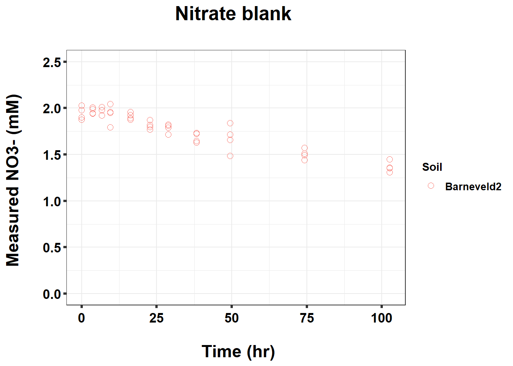

220519_Griess_antibiotics_dose_effect
KiseokUchicago
2022-05-23
Last updated: 2022-06-08
Checks: 7 0
Knit directory: Denit_visualization_R/
This reproducible R Markdown analysis was created with workflowr (version 1.6.2). The Checks tab describes the reproducibility checks that were applied when the results were created. The Past versions tab lists the development history.
Great! Since the R Markdown file has been committed to the Git repository, you know the exact version of the code that produced these results.
Great job! The global environment was empty. Objects defined in the global environment can affect the analysis in your R Markdown file in unknown ways. For reproduciblity it’s best to always run the code in an empty environment.
The command set.seed(20210924) was run prior to running the code in the R Markdown file. Setting a seed ensures that any results that rely on randomness, e.g. subsampling or permutations, are reproducible.
Great job! Recording the operating system, R version, and package versions is critical for reproducibility.
Nice! There were no cached chunks for this analysis, so you can be confident that you successfully produced the results during this run.
Great job! Using relative paths to the files within your workflowr project makes it easier to run your code on other machines.
Great! You are using Git for version control. Tracking code development and connecting the code version to the results is critical for reproducibility.
The results in this page were generated with repository version 7905c93. See the Past versions tab to see a history of the changes made to the R Markdown and HTML files.
Note that you need to be careful to ensure that all relevant files for the analysis have been committed to Git prior to generating the results (you can use wflow_publish or wflow_git_commit). workflowr only checks the R Markdown file, but you know if there are other scripts or data files that it depends on. Below is the status of the Git repository when the results were generated:
Ignored files:
Ignored: .Rhistory
Ignored: .Rproj.user/
Untracked files:
Untracked: 211020_df_full_innate.xlsx
Untracked: 220421_Griess_antibiotics_experiment_to_kyle_remove_blanks.xlsx
Untracked: 220421_Griess_antibiotics_experiment_to_kyle_remove_blanks_add_pH.xlsx
Untracked: 220421_Griess_antibiotics_experiment_to_kyle_w_autoclaved.xlsx
Untracked: 220422_pH_Antibiotics_Sterile_experiment.xlsx
Untracked: 220519_Griess_antibiotics_experiment_to_kyle_w_autoclaved.xlsx
Untracked: 220521_pH_Antibiotics_dose_effect_experiment.xlsx
Untracked: data/120321_soil_buffering_capacity_Nichols-B.xlsx
Untracked: data/210911_TOC_sample_plate1.xlsx
Untracked: data/210922_Griess_sample_plate1-investigating.xlsx
Untracked: data/210922_Griess_sample_plate1.xlsx
Untracked: data/210927_TOC_sample_plate1_100ul.xlsx
Untracked: data/210927_TOC_sample_plate1_10ul.xlsx
Untracked: data/210928_Griess_sample_plate1.xlsx
Untracked: data/211005_Griess_sample_plate1.xlsx
Untracked: data/211007_Griess_blank_plate1.xlsx
Untracked: data/211007_Griess_blank_plate2.xlsx
Untracked: data/211008_Griess_blank_plate0.xlsx
Untracked: data/211008_Griess_blank_plate1.xlsx
Untracked: data/211017_Griess_plate0.xlsx
Untracked: data/211017_Griess_plate1.xlsx
Untracked: data/211017_Griess_plate2.xlsx
Untracked: data/211017_Griess_plate3.xlsx
Untracked: data/211017_Griess_plate4.xlsx
Untracked: data/211017_Griess_plate5.xlsx
Untracked: data/211017_Griess_plate6.xlsx
Untracked: data/211017_Griess_plate7.xlsx
Untracked: data/211017_Griess_plate8.xlsx
Untracked: data/211019_Griess_plate1.xlsx
Untracked: data/211020_Griess_plate0.xlsx
Untracked: data/211020_Griess_plate1.xlsx
Untracked: data/211020_df_full_innate.xlsx
Untracked: data/211025_Griess_no3_fit_plate0.xlsx
Untracked: data/211025_Griess_no3_fit_plate1.xlsx
Untracked: data/211025_Griess_plate0.xlsx
Untracked: data/211025_Griess_plate1.xlsx
Untracked: data/211028_Griess_plate1.xlsx
Untracked: data/211028_Griess_plate1_no3_fit.xlsx
Untracked: data/211028_Griess_plate2.xlsx
Untracked: data/211028_Griess_plate2_no3_fit.xlsx
Untracked: data/211028_Griess_plate3.xlsx
Untracked: data/211028_Griess_plate3_no3_fit.xlsx
Untracked: data/211028_Griess_plate4.xlsx
Untracked: data/211028_Griess_plate4_no3_fit.xlsx
Untracked: data/211028_time_table.xlsx
Untracked: data/211127_Griess_SUP1.xlsx
Untracked: data/211127_Griess_SUP11.xlsx
Untracked: data/211127_Griess_SUP3.xlsx
Untracked: data/211127_Griess_SUP5.xlsx
Untracked: data/211127_Griess_SUP7.xlsx
Untracked: data/211127_Griess_SUP9.xlsx
Untracked: data/211127_Griess_plate0.xlsx
Untracked: data/211127_time_table.xlsx
Untracked: data/211128_Ammonia_sample_plate10.xlsx
Untracked: data/211128_Ammonia_sample_plate11.xlsx
Untracked: data/211128_Griess_plate1.xlsx
Untracked: data/211128_Griess_plate10.xlsx
Untracked: data/211128_Griess_plate11.xlsx
Untracked: data/211128_Griess_plate2.xlsx
Untracked: data/211128_Griess_plate3.xlsx
Untracked: data/211128_Griess_plate4.xlsx
Untracked: data/211128_Griess_plate5.xlsx
Untracked: data/211128_Griess_plate6.xlsx
Untracked: data/211128_Griess_plate7.xlsx
Untracked: data/211128_Griess_plate8.xlsx
Untracked: data/211128_Griess_plate9.xlsx
Untracked: data/211128_time_table.xlsx
Untracked: data/211201_pH_colorimetric.xlsx
Untracked: data/211203_slurry_vs_water_drying_table.xlsx
Untracked: data/211203_slurry_vs_water_drying_time.xlsx
Untracked: data/211208_pH_colorimetric_T3.xlsx
Untracked: data/211208_pH_colorimetric_T4.xlsx
Untracked: data/211208_pH_colorimetric_T5.xlsx
Untracked: data/211208_pH_colorimetric_plate1.xlsx
Untracked: data/211208_pH_colorimetric_plate2.xlsx
Untracked: data/211208_pH_colorimetric_plate3.xlsx
Untracked: data/211208_time_table.xlsx
Untracked: data/211209_OD600_T1.xlsx
Untracked: data/211209_OD600_T2.xlsx
Untracked: data/211209_OD600_T3.xlsx
Untracked: data/211209_time_table.xlsx
Untracked: data/211210_pH_colorimetric_T0.xlsx
Untracked: data/211210_pH_colorimetric_T1.xlsx
Untracked: data/211210_pH_colorimetric_T2.xlsx
Untracked: data/211210_pH_colorimetric_T3.xlsx
Untracked: data/211210_time_table.xlsx
Untracked: data/211218_pH_colorimetric_t0.xlsx
Untracked: data/211218_pH_colorimetric_t1.xlsx
Untracked: data/211218_pH_colorimetric_t2.xlsx
Untracked: data/211218_pH_colorimetric_t3.xlsx
Untracked: data/211218_pH_colorimetric_t4.xlsx
Untracked: data/211218_time_table.xlsx
Untracked: data/211220_Griess_plate1.xlsx
Untracked: data/211220_Griess_plate10.xlsx
Untracked: data/211220_Griess_plate11.xlsx
Untracked: data/211220_Griess_plate2.xlsx
Untracked: data/211220_Griess_plate3.xlsx
Untracked: data/211220_Griess_plate4.xlsx
Untracked: data/211220_Griess_plate5.xlsx
Untracked: data/211220_Griess_plate6.xlsx
Untracked: data/211220_Griess_plate7.xlsx
Untracked: data/211220_Griess_plate8.xlsx
Untracked: data/211220_Griess_plate9.xlsx
Untracked: data/211220_time_table_AU.xlsx
Untracked: data/211220_time_table_BN.xlsx
Untracked: data/211224_TOC_sample_plate1.xlsx
Untracked: data/220103_Griess_T0.xlsx
Untracked: data/220103_Griess_T1.xlsx
Untracked: data/220103_Griess_T11.xlsx
Untracked: data/220103_Griess_T12.xlsx
Untracked: data/220103_Griess_T2.xlsx
Untracked: data/220103_Griess_T3.xlsx
Untracked: data/220103_Griess_T4.xlsx
Untracked: data/220103_Griess_T5.xlsx
Untracked: data/220103_Griess_T6.xlsx
Untracked: data/220103_Griess_T7.xlsx
Untracked: data/220103_Griess_T8.xlsx
Untracked: data/220103_Griess_T9.xlsx
Untracked: data/220103_time_table.xlsx
Untracked: data/220106_Ammonia_sample_plate1.xlsx
Untracked: data/220107-2_Ammonia_sample_plate1.xlsx
Untracked: data/220107-3_Ammonia_sample_plate1.xlsx
Untracked: data/220107-4_Ammonia_sample_plate1.xlsx
Untracked: data/220107-5_Ammonia_sample_plate1.xlsx
Untracked: data/220107-6_Ammonia_sample_plate1.xlsx
Untracked: data/220107-7_Ammonia_sample_plate1.xlsx
Untracked: data/220107-8_Ammonia_sample_plate1.xlsx
Untracked: data/220107-9_Ammonia_sample_plate1.xlsx
Untracked: data/220107_Ammonia_sample_plate1.xlsx
Untracked: data/220108_Ammonia_sample_plate1.xlsx
Untracked: data/220110_Ammonia_sample_plate1.xlsx
Untracked: data/220110_Ammonia_sample_plate2.xlsx
Untracked: data/220111_Ammonia_sample_T0.xlsx
Untracked: data/220111_Ammonia_sample_T1.xlsx
Untracked: data/220111_Ammonia_sample_T2.xlsx
Untracked: data/220111_Ammonia_sample_T3.xlsx
Untracked: data/220111_TOC_sample_plate1.xlsx
Untracked: data/220112_Ammonia_sample_T11.xlsx
Untracked: data/220112_Ammonia_sample_T12.xlsx
Untracked: data/220112_Ammonia_sample_T4.xlsx
Untracked: data/220112_Ammonia_sample_T5.xlsx
Untracked: data/220112_Ammonia_sample_T6.xlsx
Untracked: data/220112_Ammonia_sample_T7.xlsx
Untracked: data/220112_Ammonia_sample_T8.xlsx
Untracked: data/220112_Ammonia_sample_T9.xlsx
Untracked: data/220113_pH_colorimetric_T0.xlsx
Untracked: data/220113_pH_colorimetric_T12.xlsx
Untracked: data/220113_pH_colorimetric_T2.xlsx
Untracked: data/220113_pH_colorimetric_T3.xlsx
Untracked: data/220113_pH_colorimetric_T8.xlsx
Untracked: data/220125_pH_colorimetric_pH1_mu_opt0.099.xlsx
Untracked: data/220125_pH_colorimetric_pH1_using6.66.xlsx
Untracked: data/220125_pH_colorimetric_pH2_mu_opt0.099.xlsx
Untracked: data/220125_pH_colorimetric_pH2_using6.66.xlsx
Untracked: data/220125_time_table.xlsx
Untracked: data/220128_Ammonia_sample_plate1.xlsx
Untracked: data/220128_Ammonia_sample_plate2.xlsx
Untracked: data/220128_Ammonia_sample_plate3.xlsx
Untracked: data/220128_Ammonia_sample_plate4.xlsx
Untracked: data/220128_Ammonia_sample_plate5.xlsx
Untracked: data/220128_Ammonia_sample_plate6.xlsx
Untracked: data/220128_Griess_plate1.xlsx
Untracked: data/220128_Griess_plate2.xlsx
Untracked: data/220128_Griess_plate3.xlsx
Untracked: data/220128_Griess_plate4.xlsx
Untracked: data/220128_Griess_plate5.xlsx
Untracked: data/220128_Griess_plate6.xlsx
Untracked: data/220128_time_table.xlsx
Untracked: data/220131_Ammonia_sample_plate1.xlsx
Untracked: data/220131_Ammonia_sample_plate2.xlsx
Untracked: data/220131_Ammonia_sample_plate3.xlsx
Untracked: data/220131_Ammonia_sample_plate4.xlsx
Untracked: data/220131_Ammonia_sample_plate5.xlsx
Untracked: data/220131_Ammonia_sample_plate6.xlsx
Untracked: data/220131_Griess_plate1.xlsx
Untracked: data/220131_Griess_plate2.xlsx
Untracked: data/220131_Griess_plate3.xlsx
Untracked: data/220131_Griess_plate4.xlsx
Untracked: data/220131_Griess_plate5.xlsx
Untracked: data/220131_Griess_plate6.xlsx
Untracked: data/220131_pH_colorimetric_pH1_mu_opt_T0.xlsx
Untracked: data/220131_pH_colorimetric_pH2_mu_opt_T0.xlsx
Untracked: data/220131_time_table.xlsx
Untracked: data/220327_Griess_pastplate9.xlsx
Untracked: data/220327_Griess_plate1.xlsx
Untracked: data/220327_Griess_plate10.xlsx
Untracked: data/220327_Griess_plate11.xlsx
Untracked: data/220327_Griess_plate12.xlsx
Untracked: data/220327_Griess_plate13.xlsx
Untracked: data/220327_Griess_plate14.xlsx
Untracked: data/220327_Griess_plate15.xlsx
Untracked: data/220327_Griess_plate16.xlsx
Untracked: data/220327_Griess_plate2.xlsx
Untracked: data/220327_Griess_plate3.xlsx
Untracked: data/220327_Griess_plate4.xlsx
Untracked: data/220327_Griess_plate5.xlsx
Untracked: data/220327_Griess_plate6.xlsx
Untracked: data/220327_Griess_plate7.xlsx
Untracked: data/220327_Griess_plate8.xlsx
Untracked: data/220327_Griess_plate9.xlsx
Untracked: data/220327_time_table.xlsx
Untracked: data/220329_pH_colorimetric_pH1_mu_opt_T0.xlsx
Untracked: data/220329_pH_colorimetric_pH2_mu_opt_T0.xlsx
Untracked: data/220329_pH_colorimetric_pH3_mu_opt_T0.xlsx
Untracked: data/220329_pH_colorimetric_pH4_mu_opt_T0.xlsx
Untracked: data/220329_pH_colorimetric_pH6_mu_opt_T0.xlsx
Untracked: data/220329_pH_colorimetric_pH7_mu_opt_T0.xlsx
Untracked: data/220407_pH_colorimetric_pH3_half_mu_opt_T0.xlsx
Untracked: data/220407_pH_colorimetric_pH_base_treatment_mu_opt_T0.xlsx
Untracked: data/220407_pH_colorimetric_pH_standard_150ul_mu_opt_T0.xlsx
Untracked: data/220407_pH_colorimetric_pH_standard_300ul_mu_opt_T0.xlsx
Untracked: data/220407_pH_colorimetric_pH_standard_60ul_mu_opt_T0.xlsx
Untracked: data/220408_pH_colorimetric_pH_limit_mu_opt_water.xlsx
Untracked: data/220412_pH_colorimetric_pH_half_mu_opt_WW.xlsx
Untracked: data/220414_Ammonia_sample_plate0.xlsx
Untracked: data/220418_Ammonia_sample_plate0.xlsx
Untracked: data/220419_Ammonia_sample_plate0.xlsx
Untracked: data/220420-2_Ammonia_bcf.xlsx
Untracked: data/220420_Ammonia_sample_plate1.xlsx
Untracked: data/220420_Ammonia_sample_plate10.xlsx
Untracked: data/220420_Ammonia_sample_plate11.xlsx
Untracked: data/220420_Ammonia_sample_plate12.xlsx
Untracked: data/220420_Ammonia_sample_plate13.xlsx
Untracked: data/220420_Ammonia_sample_plate14.xlsx
Untracked: data/220420_Ammonia_sample_plate15.xlsx
Untracked: data/220420_Ammonia_sample_plate16.xlsx
Untracked: data/220420_Ammonia_sample_plate2.xlsx
Untracked: data/220420_Ammonia_sample_plate3.xlsx
Untracked: data/220420_Ammonia_sample_plate4.xlsx
Untracked: data/220420_Ammonia_sample_plate5.xlsx
Untracked: data/220420_Ammonia_sample_plate6.xlsx
Untracked: data/220420_Ammonia_sample_plate7.xlsx
Untracked: data/220420_Ammonia_sample_plate8.xlsx
Untracked: data/220420_Ammonia_sample_plate9.xlsx
Untracked: data/220421_Ammonia_df_a_bcf.xlsx
Untracked: data/220421_Ammonia_df_pH_range.xlsx
Untracked: data/220421_Ammonia_sample_plate1.xlsx
Untracked: data/220421_Ammonia_sample_plate10.xlsx
Untracked: data/220421_Ammonia_sample_plate11.xlsx
Untracked: data/220421_Ammonia_sample_plate2.xlsx
Untracked: data/220421_Ammonia_sample_plate3.xlsx
Untracked: data/220421_Ammonia_sample_plate4.xlsx
Untracked: data/220421_Ammonia_sample_plate5.xlsx
Untracked: data/220421_Ammonia_sample_plate6.xlsx
Untracked: data/220421_Ammonia_sample_plate7.xlsx
Untracked: data/220421_Ammonia_sample_plate8.xlsx
Untracked: data/220421_Ammonia_sample_plate9.xlsx
Untracked: data/220421_Ammonia_sterile.xlsx
Untracked: data/220421_Griess_antibiotics_experiment_to_kyle_remove_blanks.xlsx
Untracked: data/220421_Griess_antibiotics_experiment_to_kyle_remove_blanks_add_pH.xlsx
Untracked: data/220421_Griess_plate1.xlsx
Untracked: data/220421_Griess_plate10.xlsx
Untracked: data/220421_Griess_plate11.xlsx
Untracked: data/220421_Griess_plate2.xlsx
Untracked: data/220421_Griess_plate3.xlsx
Untracked: data/220421_Griess_plate4.xlsx
Untracked: data/220421_Griess_plate5.xlsx
Untracked: data/220421_Griess_plate6.xlsx
Untracked: data/220421_Griess_plate7.xlsx
Untracked: data/220421_Griess_plate8.xlsx
Untracked: data/220421_Griess_plate9.xlsx
Untracked: data/220421_nitrate_reduced_autoclaved_samples.xlsx
Untracked: data/220421_time_table.xlsx
Untracked: data/220422_pH_Antibiotics_Sterile_experiment.xlsx
Untracked: data/220422_pH_colorimetric_LBA_Sterile_T0_mu_opt_T0.xlsx
Untracked: data/220422_pH_colorimetric_LBA_Sterile_T4_mu_opt_T0.xlsx
Untracked: data/220422_pH_colorimetric_LBA_Sterile_T4_mu_opt_T4.xlsx
Untracked: data/220422_pH_colorimetric_LBA_Sterile_T7_mu_opt_T0.xlsx
Untracked: data/220422_pH_colorimetric_LBA_Sterile_T7_mu_opt_T7.xlsx
Untracked: data/220422_pH_colorimetric_LBA_Sterile_T9_mu_opt_T0.xlsx
Untracked: data/220422_pH_colorimetric_LBA_Sterile_T9_mu_opt_T9.xlsx
Untracked: data/220508_TOC_sample_plate1.xlsx
Untracked: data/220513_TOC_sample_plate1.xlsx
Untracked: data/220513_TOC_sample_plate2.xlsx
Untracked: data/220513_TOC_sample_plate3.xlsx
Untracked: data/220517_time_table.xlsx
Untracked: data/220519_Griess_antibiotics_dose_experiment_remove_blanks.xlsx
Untracked: data/220519_Griess_crerar7_extreme.xlsx
Untracked: data/220519_Griess_plate1.xlsx
Untracked: data/220519_Griess_plate10.xlsx
Untracked: data/220519_Griess_plate11.xlsx
Untracked: data/220519_Griess_plate2.xlsx
Untracked: data/220519_Griess_plate3.xlsx
Untracked: data/220519_Griess_plate4.xlsx
Untracked: data/220519_Griess_plate5.xlsx
Untracked: data/220519_Griess_plate6.xlsx
Untracked: data/220519_Griess_plate7.xlsx
Untracked: data/220519_Griess_plate8.xlsx
Untracked: data/220519_Griess_plate9.xlsx
Untracked: data/220519_time_table.xlsx
Untracked: data/220520_TOC_sample_plate1.xlsx
Untracked: data/220520_TOC_sample_plate2.xlsx
Untracked: data/220520_TOC_sample_plate3.xlsx
Untracked: data/220521_pH_Antibiotics_dose_effect_experiment.xlsx
Untracked: data/220521_pH_colorimetric_Barneveld2_Sterile_T0_mu_opt_T0.xlsx
Untracked: data/220521_pH_colorimetric_Barneveld2_Sterile_T10_mu_opt_T0.xlsx
Untracked: data/220521_pH_colorimetric_Barneveld2_Sterile_T7_mu_opt_T0.xlsx
Untracked: data/220526_TOC_sample_plate1.xlsx
Untracked: data/220527_TOC_sample_plate1.xlsx
Untracked: data/220601_TOC_sample_plate1.xlsx
Untracked: data/220602-2_TOC_sample_plate1.xlsx
Untracked: data/220602-2_control_OD600.xlsx
Untracked: data/220602-3_TOC_sample_plate1.xlsx
Untracked: data/220602-3_control_OD600.xlsx
Untracked: data/220602_TOC_sample_plate1.xlsx
Untracked: data/220603_100ul_OD600.xlsx
Untracked: data/220603_TOC_sample_plate1.xlsx
Untracked: data/220603_TOC_sample_plate2.xlsx
Untracked: data/220606_TOC_sample_plate1.xlsx
Untracked: data/220606_TOC_sample_plate2.xlsx
Untracked: data/ForKiseok_from_Dr_Cuhel.xlsx
Untracked: data/ForKiseok_from_Dr_Cuhel_format_edited.xlsx
Untracked: data/OD434_OD585_C_WB_T5_220329.xlsx
Untracked: data/OD434_OD585_WW_C_T0_220329.xlsx
Untracked: data/OD434_OD585_pH3_half_area_220407.xlsx
Untracked: data/OD434_OD585_pH_base_treated_T0_220407.xlsx
Untracked: data/OD434_OD585_pH_half_150ul_220412.xlsx
Untracked: data/SPNa_86437_021122_edit.xlsx
Untracked: data/SPNa_86437_021122_edit2.xlsx
Untracked: data/TOC_TN_measurement_2_labs_211014.xlsx
Untracked: data/dry_weight_curve(9.5.21).xlsx
Untracked: data/pH_data(11.17.21)-Midway_etc.xlsx
Untracked: data/pH_data(12.6.21)-Midway_incubation_endpoint.xlsx
Untracked: data/pH_data(9.14.21).xlsx
Untracked: data/pH_data(9.28.21).xlsx
Untracked: data/pH_standard_150ul_220407.xlsx
Untracked: data/pH_standard_300ul_220407.xlsx
Untracked: data/pH_standard_60ul_220407.xlsx
Untracked: data/~$220513_TOC_sample_plate1.xlsx
Untracked: data/~$SPNa_86437_021122_edit.xlsx
Untracked: past_figures/
Note that any generated files, e.g. HTML, png, CSS, etc., are not included in this status report because it is ok for generated content to have uncommitted changes.
These are the previous versions of the repository in which changes were made to the R Markdown (analysis/220519_Griess_antibiotics_dose_effect.Rmd) and HTML (docs/220519_Griess_antibiotics_dose_effect.html) files. If you’ve configured a remote Git repository (see ?wflow_git_remote), click on the hyperlinks in the table below to view the files as they were in that past version.
| File | Version | Author | Date | Message |
|---|---|---|---|---|
| Rmd | 7905c93 | KiseokUchicago | 2022-06-08 | wflow_publish("analysis/*.Rmd") |
Antibiotics and dose effect (Griess assay)
Researcher: Kiseok Lee
Experiment Date: 5/8/22 - 5/12/22 (5 days)
Analysis Date: 5/23/22 Lab: Seppe Kuehn
# libraries
library(dplyr)Warning: package 'dplyr' was built under R version 4.0.5
Attaching package: 'dplyr'The following objects are masked from 'package:stats':
filter, lagThe following objects are masked from 'package:base':
intersect, setdiff, setequal, unionlibrary(ggplot2)Warning: package 'ggplot2' was built under R version 4.0.5library(RColorBrewer)
library(vegan)Loading required package: permuteLoading required package: latticeThis is vegan 2.5-7library(tidyverse)Warning: package 'tidyverse' was built under R version 4.0.5-- Attaching packages --------------------------------------- tidyverse 1.3.1 --v tibble 3.0.4 v purrr 0.3.4
v tidyr 1.1.3 v stringr 1.4.0
v readr 1.4.0 v forcats 0.5.1Warning: package 'tidyr' was built under R version 4.0.5-- Conflicts ------------------------------------------ tidyverse_conflicts() --
x dplyr::filter() masks stats::filter()
x dplyr::lag() masks stats::lag()library(magrittr)
Attaching package: 'magrittr'The following object is masked from 'package:purrr':
set_namesThe following object is masked from 'package:tidyr':
extractlibrary(readxl)
library(reshape2)
Attaching package: 'reshape2'The following object is masked from 'package:tidyr':
smithslibrary(gtools)
Attaching package: 'gtools'The following object is masked from 'package:permute':
permutelibrary(devtools)Warning: package 'devtools' was built under R version 4.0.5Loading required package: usethisWarning: package 'usethis' was built under R version 4.0.5
Attaching package: 'devtools'The following object is masked from 'package:permute':
checklibrary(openxlsx)
library(ape)Warning: package 'ape' was built under R version 4.0.5library(stringr)
library(tidyr)
library(ggrepel)Warning: package 'ggrepel' was built under R version 4.0.4library(ggpubr)Warning: package 'ggpubr' was built under R version 4.0.5
Attaching package: 'ggpubr'The following object is masked from 'package:ape':
rotaterequire(gridExtra)Loading required package: gridExtra
Attaching package: 'gridExtra'The following object is masked from 'package:dplyr':
combine# grid.arrange(p_strain, p_ai, nrow=1)
## theme for ggplot
mytheme <- theme_bw() +
theme(text = element_text(face="bold", colour = 'black')) +
theme(plot.title = element_text(size = 19,hjust = 0.5,face="bold", colour = 'black')) +
theme(axis.title.x = element_text(size = 17,hjust = 0.5,face="bold", colour = 'black')) +
theme(axis.title.y = element_text(size = 17,hjust = 0.5,face="bold", colour = 'black')) +
theme(axis.text.x = element_text(hjust = 0.5, vjust=0.3,size=13,face="bold", colour = 'black'))+
theme(axis.text.y = element_text(size=13,face="bold", colour = 'black'))+
theme(panel.grid.major = element_blank()) +
theme(panel.grid.minor = element_blank(),panel.background=element_blank(),panel.border=element_blank(),plot.background=element_blank()) +
theme(axis.ticks = element_line(size = 1.1))+
theme(legend.text=element_text(size=10,face="bold", colour = 'black'))
mytheme_2d <- theme_bw() +
theme(text = element_text(face="bold", colour = 'black')) +
theme(plot.title = element_text(size = 19,hjust = 0.5,face="bold", colour = 'black')) +
theme(axis.title.x = element_text(size = 17,hjust = 0.5,face="bold", colour = 'black')) +
theme(axis.title.y = element_text(size = 17,hjust = 0.5,face="bold", colour = 'black')) +
theme(axis.text.x = element_text(hjust = 0.5, vjust=0.3,size=13,face="bold", colour = 'black'))+
theme(axis.text.y = element_text(size=13,face="bold", colour = 'black'))+
# theme(panel.grid.major = element_blank()) +
# theme(panel.grid.minor = element_blank(),panel.background=element_blank(),plot.background=element_blank()) +
theme(axis.ticks = element_line(size = 1.1))+
theme(legend.text=element_text(size=10,face="bold", colour = 'black'))
# color collection
my_color_collection <- c(
"#CBD588", "#5F7FC7", "orange", "#AD6F3B", "#673770",
"#D14285", "#652926", "#C84248", "#8569D5", "#5E738F",
"#D1A33D", "#8A7C64", "#599861","#616163", "#FFCDB2",
"#6D9F71", "#242F40",
"#CCA43B", "#F92A82", "#ED7B84", "#7EB77F",
"#DEC4A1", "#E5D1D0", '#0E8482', '#C9DAEA', '#337357',
'#95C623', '#E55812', '#04471C', '#F2D7EE', '#D3BCC0',
'#A5668B', '#69306D', '#0E103D', '#1A535C', '#4ECDC4',
'#F7FFF7', '#FF6B6B', '#FFE66D', '#6699CC', '#FFF275',
'#FF8C42', '#FF3C38', '#A23E48', '#000000', '#CF5C36',
'#EEE5E9', '#7C7C7C', '#EFC88B', '#2E5266', '#6E8898',
'#9FB1BC', '#D3D0CB', '#E2C044', '#5BC0EB', '#FDE74C',
'#9BC53D', '#E55934', '#FA7921', "#CD9BCD", "#508578", "#DA5724")
# for git push, use this instead of using wflow_git_push()
# git push -u origin master (in the Git app / in the working directory)
# for making pdf file
library(rmarkdown)Warning: package 'rmarkdown' was built under R version 4.0.5# render("analysis/~~.Rmd", "pdf_document")1. Import data table from python code
We are going to use the vcl3 treated standard curve that is fitted with pure nitrate standards
# import file
df_plate1 <- openxlsx::read.xlsx("data/220519_Griess_plate1.xlsx")
df_plate2 <- openxlsx::read.xlsx("data/220519_Griess_plate2.xlsx")
df_plate3 <- openxlsx::read.xlsx("data/220519_Griess_plate3.xlsx")
df_plate4 <- openxlsx::read.xlsx("data/220519_Griess_plate4.xlsx")
df_plate5 <- openxlsx::read.xlsx("data/220519_Griess_plate5.xlsx")
df_plate6 <- openxlsx::read.xlsx("data/220519_Griess_plate6.xlsx")
df_plate7 <- openxlsx::read.xlsx("data/220519_Griess_plate7.xlsx")
df_plate8 <- openxlsx::read.xlsx("data/220519_Griess_plate8.xlsx")
df_plate9 <- openxlsx::read.xlsx("data/220519_Griess_plate9.xlsx")
df_plate10 <- openxlsx::read.xlsx("data/220519_Griess_plate10.xlsx")
df_plate11 <- openxlsx::read.xlsx("data/220519_Griess_plate11.xlsx")
# df_plate12 <- openxlsx::read.xlsx("data/220519_Griess_plate12.xlsx")
# df_plate13 <- openxlsx::read.xlsx("data/220519_Griess_plate13.xlsx")
# df_plate14 <- openxlsx::read.xlsx("data/220519_Griess_plate14.xlsx")
# df_plate15 <- openxlsx::read.xlsx("data/220519_Griess_plate15.xlsx")
# df_plate16 <- openxlsx::read.xlsx("data/220519_Griess_plate16.xlsx")
head(df_plate1) Well Nitrite_input Nitrate_input Ammonium_input Soil Sample_type
1 A01 0 2 0 Barneveld2 Slurry
2 A02 0 2 0 Barneveld2 Slurry
3 A03 0 2 0 Barneveld2 Slurry
4 A04 0 2 0 Barneveld2 Slurry
5 A05 0 2 0 Barneveld2 Slurry
6 A06 0 2 0 Barneveld2 Slurry
Titration_type Antibiotics_type Dose_ppm Unit Concentration_M Added_ul
1 HCl CHL 200 8 4 20
2 HCl CHL 200 0 0 20
3 NaOH CHL 200 8 4 20
4 HCl CHL 1000 4 2 20
5 NaOH CHL 1000 4 2 20
6 HCl CHL 2500 8 4 20
Time_point NO2_OD540 NO2NO3_OD540 NO2_mM NO2NO3_mM NO3_mM
1 T0 0.00225 0.77785 0.003328244 0.7006403 0.6973120
2 T0 0.00155 0.81620 0.002982502 0.7382703 0.7352878
3 T0 0.00625 0.79515 0.005304284 0.7175891 0.7122848
4 T0 0.00000 NA 0.002216999 NA NA
5 T0 0.00595 0.78330 0.005156059 0.7059750 0.7008189
6 T0 0.00035 0.74375 0.002389846 0.6673581 0.6649683colnames(df_plate1) [1] "Well" "Nitrite_input" "Nitrate_input" "Ammonium_input"
[5] "Soil" "Sample_type" "Titration_type" "Antibiotics_type"
[9] "Dose_ppm" "Unit" "Concentration_M" "Added_ul"
[13] "Time_point" "NO2_OD540" "NO2NO3_OD540" "NO2_mM"
[17] "NO2NO3_mM" "NO3_mM" dim(df_plate1)[1] 96 18head(df_plate2) Well Nitrite_input Nitrate_input Ammonium_input Soil Sample_type
1 A01 0 2 0 Barneveld2 Slurry
2 A02 0 2 0 Barneveld2 Slurry
3 A03 0 2 0 Barneveld2 Slurry
4 A04 0 2 0 Barneveld2 Slurry
5 A05 0 2 0 Barneveld2 Slurry
6 A06 0 2 0 Barneveld2 Slurry
Titration_type Antibiotics_type Dose_ppm Unit Concentration_M Added_ul
1 HCl CHL 200 8 4 20
2 HCl CHL 200 0 0 20
3 NaOH CHL 200 8 4 20
4 HCl CHL 1000 4 2 20
5 NaOH CHL 1000 4 2 20
6 HCl CHL 2500 8 4 20
Time_point NO2_OD540 NO2NO3_OD540 NO2_mM NO2NO3_mM NO3_mM
1 T1 0.00130 0.77915 0.002859028 0.7019124 0.6990533
2 T1 0.00060 0.86555 0.002513312 0.7870108 0.7844974
3 T1 0.00625 0.78815 0.005304284 0.7107260 0.7054217
4 T1 0.00115 0.78290 0.002784944 0.7055833 0.7027984
5 T1 0.00835 0.80305 0.006341956 0.7253431 0.7190012
6 T1 0.00000 0.76610 0.002216999 0.6891533 0.6869363colnames(df_plate2) [1] "Well" "Nitrite_input" "Nitrate_input" "Ammonium_input"
[5] "Soil" "Sample_type" "Titration_type" "Antibiotics_type"
[9] "Dose_ppm" "Unit" "Concentration_M" "Added_ul"
[13] "Time_point" "NO2_OD540" "NO2NO3_OD540" "NO2_mM"
[17] "NO2NO3_mM" "NO3_mM" dim(df_plate2)[1] 96 18head(df_plate3) Well Nitrite_input Nitrate_input Ammonium_input Soil Sample_type
1 A01 0 2 0 Barneveld2 Slurry
2 A02 0 2 0 Barneveld2 Slurry
3 A03 0 2 0 Barneveld2 Slurry
4 A04 0 2 0 Barneveld2 Slurry
5 A05 0 2 0 Barneveld2 Slurry
6 A06 0 2 0 Barneveld2 Slurry
Titration_type Antibiotics_type Dose_ppm Unit Concentration_M Added_ul
1 HCl CHL 200 8 4 20
2 HCl CHL 200 0 0 20
3 NaOH CHL 200 8 4 20
4 HCl CHL 1000 4 2 20
5 NaOH CHL 1000 4 2 20
6 HCl CHL 2500 8 4 20
Time_point NO2_OD540 NO2NO3_OD540 NO2_mM NO2NO3_mM NO3_mM
1 T2 0.00000 0.73940 0.002216999 0.6631243 0.6609073
2 T2 0.03575 0.83020 0.019897054 0.7520609 0.7321638
3 T2 0.02915 0.72475 0.016629245 0.6488854 0.6322561
4 T2 0.00240 0.80440 0.003402335 0.7266691 0.7232668
5 T2 0.08225 0.76105 0.042969329 0.6842225 0.6412531
6 T2 0.00135 0.77510 0.002883722 0.6979501 0.6950663colnames(df_plate3) [1] "Well" "Nitrite_input" "Nitrate_input" "Ammonium_input"
[5] "Soil" "Sample_type" "Titration_type" "Antibiotics_type"
[9] "Dose_ppm" "Unit" "Concentration_M" "Added_ul"
[13] "Time_point" "NO2_OD540" "NO2NO3_OD540" "NO2_mM"
[17] "NO2NO3_mM" "NO3_mM" dim(df_plate3)[1] 96 18head(df_plate4) Well Nitrite_input Nitrate_input Ammonium_input Soil Sample_type
1 A01 0 2 0 Barneveld2 Slurry
2 A02 0 2 0 Barneveld2 Slurry
3 A03 0 2 0 Barneveld2 Slurry
4 A04 0 2 0 Barneveld2 Slurry
5 A05 0 2 0 Barneveld2 Slurry
6 A06 0 2 0 Barneveld2 Slurry
Titration_type Antibiotics_type Dose_ppm Unit Concentration_M Added_ul
1 HCl CHL 200 8 4 20
2 HCl CHL 200 0 0 20
3 NaOH CHL 200 8 4 20
4 HCl CHL 1000 4 2 20
5 NaOH CHL 1000 4 2 20
6 HCl CHL 2500 8 4 20
Time_point NO2_OD540 NO2NO3_OD540 NO2_mM NO2NO3_mM NO3_mM
1 T3 0.00000 0.69630 0.002216999 0.6213196 0.6191026
2 T3 0.10995 0.76130 0.056754576 0.6844665 0.6277119
3 T3 0.08555 0.75005 0.044609997 0.6734945 0.6288845
4 T3 0.00545 0.74295 0.004909026 0.6665793 0.6616702
5 T3 0.20220 0.76330 0.102888295 0.6864189 0.5835306
6 T3 0.00165 0.76965 0.003031893 0.6926218 0.6895899colnames(df_plate4) [1] "Well" "Nitrite_input" "Nitrate_input" "Ammonium_input"
[5] "Soil" "Sample_type" "Titration_type" "Antibiotics_type"
[9] "Dose_ppm" "Unit" "Concentration_M" "Added_ul"
[13] "Time_point" "NO2_OD540" "NO2NO3_OD540" "NO2_mM"
[17] "NO2NO3_mM" "NO3_mM" dim(df_plate4)[1] 96 18head(df_plate5) Well Nitrite_input Nitrate_input Ammonium_input Soil Sample_type
1 A01 0 2 0 Barneveld2 Slurry
2 A02 0 2 0 Barneveld2 Slurry
3 A03 0 2 0 Barneveld2 Slurry
4 A04 0 2 0 Barneveld2 Slurry
5 A05 0 2 0 Barneveld2 Slurry
6 A06 0 2 0 Barneveld2 Slurry
Titration_type Antibiotics_type Dose_ppm Unit Concentration_M Added_ul
1 HCl CHL 200 8 4 20
2 HCl CHL 200 0 0 20
3 NaOH CHL 200 8 4 20
4 HCl CHL 1000 4 2 20
5 NaOH CHL 1000 4 2 20
6 HCl CHL 2500 8 4 20
Time_point NO2_OD540 NO2NO3_OD540 NO2_mM NO2NO3_mM NO3_mM
1 T4 0.00030 0.75610 0.002365153 0.6793928 0.6770276
2 T4 0.30925 0.68480 0.156864143 0.6102089 0.4533448
3 T4 0.24325 0.76685 0.123529596 0.6898859 0.5663563
4 T4 0.04470 0.70580 0.024331159 0.6305118 0.6061806
5 T4 0.49995 0.75155 0.254229048 0.6749564 0.4207274
6 T4 0.00010 0.76725 0.002266383 0.6902767 0.6880103colnames(df_plate5) [1] "Well" "Nitrite_input" "Nitrate_input" "Ammonium_input"
[5] "Soil" "Sample_type" "Titration_type" "Antibiotics_type"
[9] "Dose_ppm" "Unit" "Concentration_M" "Added_ul"
[13] "Time_point" "NO2_OD540" "NO2NO3_OD540" "NO2_mM"
[17] "NO2NO3_mM" "NO3_mM" dim(df_plate5)[1] 96 18head(df_plate6) Well Nitrite_input Nitrate_input Ammonium_input Soil Sample_type
1 A01 0 2 0 Barneveld2 Slurry
2 A02 0 2 0 Barneveld2 Slurry
3 A03 0 2 0 Barneveld2 Slurry
4 A04 0 2 0 Barneveld2 Slurry
5 A05 0 2 0 Barneveld2 Slurry
6 A06 0 2 0 Barneveld2 Slurry
Titration_type Antibiotics_type Dose_ppm Unit Concentration_M Added_ul
1 HCl CHL 200 8 4 20
2 HCl CHL 200 0 0 20
3 NaOH CHL 200 8 4 20
4 HCl CHL 1000 4 2 20
5 NaOH CHL 1000 4 2 20
6 HCl CHL 2500 8 4 20
Time_point NO2_OD540 NO2NO3_OD540 NO2_mM NO2NO3_mM NO3_mM
1 T5 0.00135 0.69530 0.002883722 0.6203527 0.6174690
2 T5 0.44725 0.56600 0.227163789 0.4964834 0.2693196
3 T5 0.33535 0.67675 0.170097203 0.6024423 0.4323451
4 T5 0.09495 0.65085 0.049285811 0.5775145 0.5282287
5 T5 0.35150 0.59560 0.178300016 0.5246421 0.3463421
6 T5 0.00385 0.74120 0.004118585 0.6648759 0.6607573colnames(df_plate6) [1] "Well" "Nitrite_input" "Nitrate_input" "Ammonium_input"
[5] "Soil" "Sample_type" "Titration_type" "Antibiotics_type"
[9] "Dose_ppm" "Unit" "Concentration_M" "Added_ul"
[13] "Time_point" "NO2_OD540" "NO2NO3_OD540" "NO2_mM"
[17] "NO2NO3_mM" "NO3_mM" dim(df_plate6)[1] 96 18head(df_plate7) Well Nitrite_input Nitrate_input Ammonium_input Soil Sample_type
1 A01 0 2 0 Barneveld2 Slurry
2 A02 0 2 0 Barneveld2 Slurry
3 A03 0 2 0 Barneveld2 Slurry
4 A04 0 2 0 Barneveld2 Slurry
5 A05 0 2 0 Barneveld2 Slurry
6 A06 0 2 0 Barneveld2 Slurry
Titration_type Antibiotics_type Dose_ppm Unit Concentration_M Added_ul
1 HCl CHL 200 8 4 20
2 HCl CHL 200 0 0 20
3 NaOH CHL 200 8 4 20
4 HCl CHL 1000 4 2 20
5 NaOH CHL 1000 4 2 20
6 HCl CHL 2500 8 4 20
Time_point NO2_OD540 NO2NO3_OD540 NO2_mM NO2NO3_mM NO3_mM
1 T6 0.00305 0.70795 0.003723402 0.6325938 0.62887044
2 T6 0.58560 0.50175 0.298480858 0.4357558 0.13727496
3 T6 0.49165 0.75095 0.249958244 0.6743716 0.42441338
4 T6 0.14610 0.61335 0.074791657 0.5415835 0.46679188
5 T6 0.94605 0.65575 0.488460187 0.5822235 0.09376335
6 T6 0.00170 0.72830 0.003056588 0.6523330 0.64927641colnames(df_plate7) [1] "Well" "Nitrite_input" "Nitrate_input" "Ammonium_input"
[5] "Soil" "Sample_type" "Titration_type" "Antibiotics_type"
[9] "Dose_ppm" "Unit" "Concentration_M" "Added_ul"
[13] "Time_point" "NO2_OD540" "NO2NO3_OD540" "NO2_mM"
[17] "NO2NO3_mM" "NO3_mM" dim(df_plate7)[1] 96 18head(df_plate8) Well Nitrite_input Nitrate_input Ammonium_input Soil Sample_type
1 A01 0 2 0 Barneveld2 Slurry
2 A02 0 2 0 Barneveld2 Slurry
3 A03 0 2 0 Barneveld2 Slurry
4 A04 0 2 0 Barneveld2 Slurry
5 A05 0 2 0 Barneveld2 Slurry
6 A06 0 2 0 Barneveld2 Slurry
Titration_type Antibiotics_type Dose_ppm Unit Concentration_M Added_ul
1 HCl CHL 200 8 4 20
2 HCl CHL 200 0 0 20
3 NaOH CHL 200 8 4 20
4 HCl CHL 1000 4 2 20
5 NaOH CHL 1000 4 2 20
6 HCl CHL 2500 8 4 20
Time_point NO2_OD540 NO2NO3_OD540 NO2_mM NO2NO3_mM NO3_mM
1 T7 0.00165 0.64065 0.003031893 0.5677225 0.5646906
2 T7 0.71035 0.36455 0.363533189 0.3078278 0.0000000
3 T7 0.66660 0.71390 0.340637155 0.6383592 0.2977221
4 T7 0.19865 0.54575 0.101106514 0.4772857 0.3761792
5 T7 1.03050 0.54405 0.533889859 0.4756765 0.0000000
6 T7 0.00235 0.67545 0.003377638 0.6011889 0.5978113colnames(df_plate8) [1] "Well" "Nitrite_input" "Nitrate_input" "Ammonium_input"
[5] "Soil" "Sample_type" "Titration_type" "Antibiotics_type"
[9] "Dose_ppm" "Unit" "Concentration_M" "Added_ul"
[13] "Time_point" "NO2_OD540" "NO2NO3_OD540" "NO2_mM"
[17] "NO2NO3_mM" "NO3_mM" dim(df_plate8)[1] 96 18head(df_plate9) Well Nitrite_input Nitrate_input Ammonium_input Soil Sample_type
1 A01 0 2 0 Barneveld2 Slurry
2 A02 0 2 0 Barneveld2 Slurry
3 A03 0 2 0 Barneveld2 Slurry
4 A04 0 2 0 Barneveld2 Slurry
5 A05 0 2 0 Barneveld2 Slurry
6 A06 0 2 0 Barneveld2 Slurry
Titration_type Antibiotics_type Dose_ppm Unit Concentration_M Added_ul
1 HCl CHL 200 8 4 20
2 HCl CHL 200 0 0 20
3 NaOH CHL 200 8 4 20
4 HCl CHL 1000 4 2 20
5 NaOH CHL 1000 4 2 20
6 HCl CHL 2500 8 4 20
Time_point NO2_OD540 NO2NO3_OD540 NO2_mM NO2NO3_mM NO3_mM
1 T8 0.00185 0.58835 0.003130675 0.5177344 0.5146037
2 T8 0.38725 0.19860 0.196497744 0.1561272 0.0000000
3 T8 0.93585 0.69525 0.482997514 0.6203044 0.1373068
4 T8 0.29925 0.46280 0.151801664 0.3991991 0.2473974
5 T8 0.96705 0.48035 0.499723323 0.4156469 0.0000000
6 T8 0.00135 0.66435 0.002883722 0.5904963 0.5876126colnames(df_plate9) [1] "Well" "Nitrite_input" "Nitrate_input" "Ammonium_input"
[5] "Soil" "Sample_type" "Titration_type" "Antibiotics_type"
[9] "Dose_ppm" "Unit" "Concentration_M" "Added_ul"
[13] "Time_point" "NO2_OD540" "NO2NO3_OD540" "NO2_mM"
[17] "NO2NO3_mM" "NO3_mM" dim(df_plate9)[1] 96 18head(df_plate10) Well Nitrite_input Nitrate_input Ammonium_input Soil Sample_type
1 A01 0 2 0 Barneveld2 Slurry
2 A02 0 2 0 Barneveld2 Slurry
3 A03 0 2 0 Barneveld2 Slurry
4 A04 0 2 0 Barneveld2 Slurry
5 A05 0 2 0 Barneveld2 Slurry
6 A06 0 2 0 Barneveld2 Slurry
Titration_type Antibiotics_type Dose_ppm Unit Concentration_M Added_ul
1 HCl CHL 200 8 4 20
2 HCl CHL 200 0 0 20
3 NaOH CHL 200 8 4 20
4 HCl CHL 1000 4 2 20
5 NaOH CHL 1000 4 2 20
6 HCl CHL 2500 8 4 20
Time_point NO2_OD540 NO2NO3_OD540 NO2_mM NO2NO3_mM NO3_mM
1 T9 0.00385 0.52125 0.004118585 0.4541303 0.4500117
2 T9 0.00195 0.00000 0.003180067 0.0000000 0.0000000
3 T9 1.03915 0.55265 0.538563651 0.4838211 0.0000000
4 T9 0.43665 0.32345 0.221734700 0.2699545 0.0482198
5 T9 0.51555 0.25995 0.262264400 0.2118343 0.0000000
6 T9 0.00390 0.61395 0.004143284 0.5421569 0.5380137colnames(df_plate10) [1] "Well" "Nitrite_input" "Nitrate_input" "Ammonium_input"
[5] "Soil" "Sample_type" "Titration_type" "Antibiotics_type"
[9] "Dose_ppm" "Unit" "Concentration_M" "Added_ul"
[13] "Time_point" "NO2_OD540" "NO2NO3_OD540" "NO2_mM"
[17] "NO2NO3_mM" "NO3_mM" dim(df_plate10)[1] 96 18head(df_plate11) Well Nitrite_input Nitrate_input Ammonium_input Soil Sample_type
1 A01 0 2 0 Barneveld2 Slurry
2 A02 0 2 0 Barneveld2 Slurry
3 A03 0 2 0 Barneveld2 Slurry
4 A04 0 2 0 Barneveld2 Slurry
5 A05 0 2 0 Barneveld2 Slurry
6 A06 0 2 0 Barneveld2 Slurry
Titration_type Antibiotics_type Dose_ppm Unit Concentration_M Added_ul
1 HCl CHL 200 8 4 20
2 HCl CHL 200 0 0 20
3 NaOH CHL 200 8 4 20
4 HCl CHL 1000 4 2 20
5 NaOH CHL 1000 4 2 20
6 HCl CHL 2500 8 4 20
Time_point NO2_OD540 NO2NO3_OD540 NO2_mM NO2NO3_mM NO3_mM
1 T10 0.00540 0.40885 0.004884323 0.34887886 0.3439945
2 T10 0.00370 0.00000 0.004044486 0.00000000 0.0000000
3 T10 0.90720 0.46375 0.467681626 0.40008845 0.0000000
4 T10 0.30135 0.14860 0.152864433 0.11104264 0.0000000
5 T10 0.20335 0.09780 0.103465603 0.06552209 0.0000000
6 T10 0.00255 0.50740 0.003476426 0.44107469 0.4375983colnames(df_plate11) [1] "Well" "Nitrite_input" "Nitrate_input" "Ammonium_input"
[5] "Soil" "Sample_type" "Titration_type" "Antibiotics_type"
[9] "Dose_ppm" "Unit" "Concentration_M" "Added_ul"
[13] "Time_point" "NO2_OD540" "NO2NO3_OD540" "NO2_mM"
[17] "NO2NO3_mM" "NO3_mM" dim(df_plate11)[1] 96 18# head(df_plate16)
# colnames(df_plate16)
# dim(df_plate16)
# X1 to Well
# df_plate1 %<>% rename(Well = X1)
# df_plate2 %<>% rename(Well = X1)
# df_plate3 %<>% rename(Well = X1)
# df_plate4 %<>% rename(Well = X1)
# df_plate5 %<>% rename(Well = X1)
# df_plate6 %<>% rename(Well = X1)
# df_plate7 %<>% rename(Well = X1)
# df_plate8 %<>% rename(Well = X1)
# df_plate9 %<>% rename(Well = X1)
# df_plate10 %<>% rename(Well = X1)
# df_plate11 %<>% rename(Well = X1)
# df_plate12 %<>% rename(Well = X1)
# df_plate13 %<>% rename(Well = X1)
# df_plate14 %<>% rename(Well = X1)
# df_plate15 %<>% rename(Well = X1)
# df_plate16 %<>% rename(Well = X1)
# remove wells that were contaminated during the experiment
df_plate1 %<>% filter(!(Well %in% c("A04"))) # NA detected below... don't know the reason
# df_plate4 %<>% filter(!(Well %in% c("H05"))) # filter defect
df_plate6 %<>% filter(!(Well %in% c("G05"))) # Too low.... why???
# df_plate8 %<>% filter(!(Well %in% c("A01", "A09"))) # filter defect
# df_plate9 %<>% filter(!(Well %in% c("D11"))) # NA detected below...
# df_plate11 %<>% filter(!(Well %in% c("A12"))) # filter defect
# bind two dataframe
df_p <- rbind(df_plate1, df_plate2, df_plate3, df_plate4, df_plate5, df_plate6, df_plate7, df_plate8, df_plate9, df_plate10, df_plate11)
# df_plate12, df_plate13, df_plate14, df_plate15, df_plate16)
dim(df_p)[1] 1054 18# remove NA
dim(df_p) # 1056[1] 1054 18df_p[is.na(df_p)]character(0)df_na <- df_p[rowSums(is.na(df_p)) > 0,] # A04 in plate1 has NA. Let's remove from the wells above.
# df_p <- na.omit(df_p)
df_p <- df_p[rowSums(is.na(df_p)) == 0,]
dim(df_p) # 1055[1] 1054 18# multiply dilution factor which is 5/2
# df_p %<>% select(-NO2_OD540, -NO2NO3_OD540)
df_p %<>% mutate(NO2_mM = NO2_mM * (5/2), NO2NO3_mM = NO2NO3_mM * (5/2), NO3_mM = NO3_mM * (5/2))
# Get the metadata for time point and left join
Time_table <- openxlsx::read.xlsx("data/220519_time_table.xlsx")
# Time_table_BN <- openxlsx::read.xlsx("data/220519_time_table_BN.xlsx")
# Time_table <- rbind(Time_table_AU, Time_table_BN)
Time_table %<>% select(-Date)
Time_table$Time_hours <- round(Time_table$Time_hours, 1)
Time_table$Time_days <- round(Time_table$Time_days, 1)
df_time <- Time_table
dim(df_p)[1] 1054 18df_p <- df_p %>% left_join(Time_table, by=("Time_point"="Time_point"))
dim(df_p)[1] 1054 21colnames(df_p) [1] "Well" "Nitrite_input" "Nitrate_input" "Ammonium_input"
[5] "Soil" "Sample_type" "Titration_type" "Antibiotics_type"
[9] "Dose_ppm" "Unit" "Concentration_M" "Added_ul"
[13] "Time_point" "NO2_OD540" "NO2NO3_OD540" "NO2_mM"
[17] "NO2NO3_mM" "NO3_mM" "Time_minutes" "Time_hours"
[21] "Time_days" # time_point order
# df_p$Time_point <- factor(df_p$Time_point, levels = c(paste0("LBA_T",0:10), paste0("Sterile_T",0:10)))
df_p$Time_point <- factor(df_p$Time_point, levels = c(paste0("T",0:10)))2. Get average and standard deviation & Moisture correction & Blank correction
# plot to see
ggplot(df_p, aes(x=Time_point, y=NO3_mM, color=Sample_type, group=Sample_type)) +
geom_point(size=2.5, shape=21) +
# geom_line(size=1)+
scale_fill_brewer(palette='Set2') +
ylab("NO3- (mM) \n") +
xlab("\n Time_point") +
# scale_y_continuous(breaks = seq(0,0.3,0.05), limits=c(0, 0.3))+
ggtitle("Without averaging \n") +
mytheme_2d +
theme(axis.text.x = element_text(hjust = 0.8, vjust=0.8, size=13, family="serif", angle = 40))# plot to see
ggplot(df_p, aes(x=Time_point, y=NO2_mM, color=Sample_type, group=Sample_type)) +
geom_point(size=2.5, shape=21) +
# geom_line(size=1)+
scale_fill_brewer(palette='Set2') +
ylab("NO2- (mM) \n") +
xlab("\n Time_point") +
# scale_y_continuous(breaks = seq(0,0.3,0.05), limits=c(0, 0.3))+
ggtitle("Without averaging \n") +
mytheme_2d+
theme(axis.text.x = element_text(hjust = 0.8, vjust=0.8, size=13, family="serif", angle = 40))# let's plot the no nitrate sample's nitrate, nitrite levels
df_no_nitrite <- df_p %>% filter(Sample_type == "No_Nitrate")
ggplot(df_no_nitrite, aes(x=Time_point, y=NO3_mM, color=Sample_type, group=Sample_type)) +
geom_point(size=2.5, shape=21) +
# geom_line(size=1)+
scale_fill_brewer(palette='Set2') +
ylab("NO3- (mM) \n") +
xlab("\n Time_point") +
# scale_y_continuous(breaks = seq(0,0.5,0.05), limits=c(0, 0.5))+
ggtitle("Samples without nitrate addition \n") +
mytheme_2d +
theme(axis.text.x = element_text(hjust = 0.8, vjust=0.8, size=13, family="serif", angle = 40))ggplot(df_no_nitrite, aes(x=Time_point, y=NO2_mM, color=Sample_type, group=Sample_type)) +
geom_point(size=2.5, shape=21) +
# geom_line(size=1)+
scale_fill_brewer(palette='Set2') +
ylab("NO2- (mM) \n") +
xlab("\n Time_point") +
scale_y_continuous(breaks = seq(0,0.3,0.05), limits=c(0, 0.3))+
ggtitle("Samples without nitrate addition \n") +
mytheme_2d+
theme(axis.text.x = element_text(hjust = 0.8, vjust=0.8, size=13, family="serif", angle = 40))# T8 is weird
# how about blanks?
# let's plot the blank sample's nitrate, nitrite levels
df_A_blank <- df_p %>% filter(Sample_type == "Nitrate_Blank")
ggplot(df_A_blank, aes(x=Time_point, y=NO3_mM, color=Sample_type, group=Sample_type)) +
geom_point(size=2.5, shape=21) +
# geom_line(size=1)+
scale_fill_brewer(palette='Set2') +
ylab("NO3- (mM) \n") +
xlab("\n Time_point") +
scale_y_continuous(breaks = seq(0,2.5,0.1), limits=c(0, 2.5))+
ggtitle("Nitrate blanks \n") +
mytheme_2d +
theme(axis.text.x = element_text(hjust = 0.8, vjust=0.8, size=13, family="serif", angle = 40))ggplot(df_A_blank, aes(x=Time_point, y=NO2_mM, color=Sample_type, group=Sample_type)) +
geom_point(size=2.5, shape=21) +
# geom_line(size=1)+
scale_fill_brewer(palette='Set2') +
ylab("NO2- (mM) \n") +
xlab("\n Time_point") +
scale_y_continuous(breaks = seq(0,0.3,0.05), limits=c(0, 0.3))+
ggtitle("Nitrate blanks \n") +
mytheme_2d+
theme(axis.text.x = element_text(hjust = 0.8, vjust=0.8, size=13, family="serif", angle = 40))
# let's plot the Nitrite blank sample's nitrate, nitrite levels
df_I_blank <- df_p %>% filter(Sample_type == "Nitrite_Blank")
ggplot(df_I_blank, aes(x=Time_point, y=NO3_mM, color=Sample_type, group=Sample_type)) +
geom_point(size=2.5, shape=21) +
# geom_line(size=1)+
scale_fill_brewer(palette='Set2') +
ylab("NO3- (mM) \n") +
xlab("\n Time_point") +
scale_y_continuous(breaks = seq(0,2.5,0.1), limits=c(0, 2.5))+
ggtitle("Nitrite blanks \n") +
mytheme_2d +
theme(axis.text.x = element_text(hjust = 0.8, vjust=0.8, size=13, family="serif", angle = 40))ggplot(df_I_blank, aes(x=Time_point, y=NO2_mM, color=Sample_type, group=Sample_type)) +
geom_point(size=2.5, shape=21) +
# geom_line(size=1)+
scale_fill_brewer(palette='Set2') +
ylab("NO2- (mM) \n") +
xlab("\n Time_point") +
scale_y_continuous(breaks = seq(0,2.5,0.1), limits=c(0, 2.5))+
ggtitle("Nitrite blanks \n") +
mytheme_2d+
theme(axis.text.x = element_text(hjust = 0.8, vjust=0.8, size=13, family="serif", angle = 40))### Important ###
# Due to the nitrate decrease in time, something is wrong. Therefore, I would omit the evaporation correction????
# average technical replicate (here only 1 replicate per pH perturbation)
colnames(df_p) [1] "Well" "Nitrite_input" "Nitrate_input" "Ammonium_input"
[5] "Soil" "Sample_type" "Titration_type" "Antibiotics_type"
[9] "Dose_ppm" "Unit" "Concentration_M" "Added_ul"
[13] "Time_point" "NO2_OD540" "NO2NO3_OD540" "NO2_mM"
[17] "NO2NO3_mM" "NO3_mM" "Time_minutes" "Time_hours"
[21] "Time_days" dim(df_p)[1] 1054 21# df_p <- df_p %>% group_by(Nitrite_input, Nitrate_input, Soil, Titration_type, Concentration_M, Added_ul, Sample_type, Time_point, Time_minutes, Time_hours, Time_days) %>% summarise(NO2_mM = mean(NO2_mM), Std_NO2_mM = sd(NO2_mM), NO3_mM = mean(NO3_mM), Std_NO3_mM = sd(NO3_mM)) %>% ungroup()
# mols and molarity unit conversion
# test
df_p$Titration_type %>% length()[1] 1054# Setting H_mM column
# df_soil <- df_p %>% filter(Titration_type %in% c("NaOH","HCl"))
Added_Volume <- 1.7 # ml
Soil_mg <- 0.85
moisture_percent_1 = 20.15 # Barneveld2
Added_Volume + Soil_mg*(moisture_percent_1/100)[1] 1.871275# moisture_percent_2 = 8.12 # Sterile - LaBaghWoods that has been autoclaved 5 times.
# Added_Volume + Soil_mg*(moisture_percent_2/100)
# moisture_percent_3 = 9.0 # Crerar7
# Added_Volume + Soil_mg*(moisture_percent_3/100)
df_p$Added_ul <- ifelse(df_p$Titration_type == "NaOH", -1*df_p$Added_ul, df_p$Added_ul) # HCl is +, NaOH is -
df_p %<>% mutate(H_mol = Concentration_M * Added_ul * 10^(-6)) # Calculate H mol
df_p$Volume <- ifelse(df_p$Soil == "Barneveld2", Added_Volume + Soil_mg*(moisture_percent_1/100),
ifelse(df_p$Soil == "LaBaghWoods_autoclaved_pH6.66", Added_Volume + Soil_mg*(moisture_percent_2/100),
0))
# ifelse(df_p$Soil == "Crerar1_pH8.05", Added_Volume + Soil_mg*(moisture_percent_3/100),
# 0))) # Calc total volume
# df_p$Volume <- ifelse(df_p$Soil == "Allandale_pH4", Added_Volume + Soil_mg*(moisture_percent_2/100), df_p$Volume) # Calc total volume
# df_p$Volume %>% unique()
df_p %<>% mutate(H_Molarity = H_mol / (Volume * 10^(-3)))
df_p %<>% mutate(H_mM = H_Molarity * 1000)
# openxlsx::write.xlsx(df_p, "df_p.xlsx")
# how many levels of H_mM?
df_p %>% filter(Soil == "Barneveld2")%>% select(H_mM) %>% unique() %>% arrange(H_mM) H_mM
1 -42.7516
2 -21.3758
3 0.0000
4 21.3758
5 42.7516# df_p %>% filter(Soil == "LaBaghWoods_autoclaved_pH6.66")%>% select(H_mM) %>% unique() %>% arrange(H_mM)
# df_p %>% filter(Soil == "Crerar1_pH8.05")%>% select(H_mM) %>% unique() %>% arrange()
colnames(df_p) [1] "Well" "Nitrite_input" "Nitrate_input" "Ammonium_input"
[5] "Soil" "Sample_type" "Titration_type" "Antibiotics_type"
[9] "Dose_ppm" "Unit" "Concentration_M" "Added_ul"
[13] "Time_point" "NO2_OD540" "NO2NO3_OD540" "NO2_mM"
[17] "NO2NO3_mM" "NO3_mM" "Time_minutes" "Time_hours"
[21] "Time_days" "H_mol" "Volume" "H_Molarity"
[25] "H_mM" ## Moisture correction
dim(df_p)[1] 1054 25# Testing negative samples
df_no3_blank <- df_p %>% filter(Sample_type == "Nitrate_Blank") # Use Nitrate_Blank instead in the future
df_no3_blank # 33 Well Nitrite_input Nitrate_input Ammonium_input Soil Sample_type
1 G06 0 2 0 Barneveld2 Nitrate_Blank
2 G12 0 2 0 Barneveld2 Nitrate_Blank
3 H06 0 2 0 Barneveld2 Nitrate_Blank
4 H12 0 2 0 Barneveld2 Nitrate_Blank
5 G06 0 2 0 Barneveld2 Nitrate_Blank
6 G12 0 2 0 Barneveld2 Nitrate_Blank
7 H06 0 2 0 Barneveld2 Nitrate_Blank
8 H12 0 2 0 Barneveld2 Nitrate_Blank
9 G06 0 2 0 Barneveld2 Nitrate_Blank
10 G12 0 2 0 Barneveld2 Nitrate_Blank
11 H06 0 2 0 Barneveld2 Nitrate_Blank
12 H12 0 2 0 Barneveld2 Nitrate_Blank
13 G06 0 2 0 Barneveld2 Nitrate_Blank
14 G12 0 2 0 Barneveld2 Nitrate_Blank
15 H06 0 2 0 Barneveld2 Nitrate_Blank
16 H12 0 2 0 Barneveld2 Nitrate_Blank
17 G06 0 2 0 Barneveld2 Nitrate_Blank
18 G12 0 2 0 Barneveld2 Nitrate_Blank
19 H06 0 2 0 Barneveld2 Nitrate_Blank
20 H12 0 2 0 Barneveld2 Nitrate_Blank
21 G06 0 2 0 Barneveld2 Nitrate_Blank
22 G12 0 2 0 Barneveld2 Nitrate_Blank
23 H06 0 2 0 Barneveld2 Nitrate_Blank
24 H12 0 2 0 Barneveld2 Nitrate_Blank
25 G06 0 2 0 Barneveld2 Nitrate_Blank
26 G12 0 2 0 Barneveld2 Nitrate_Blank
27 H06 0 2 0 Barneveld2 Nitrate_Blank
28 H12 0 2 0 Barneveld2 Nitrate_Blank
29 G06 0 2 0 Barneveld2 Nitrate_Blank
30 G12 0 2 0 Barneveld2 Nitrate_Blank
31 H06 0 2 0 Barneveld2 Nitrate_Blank
32 H12 0 2 0 Barneveld2 Nitrate_Blank
33 G06 0 2 0 Barneveld2 Nitrate_Blank
34 G12 0 2 0 Barneveld2 Nitrate_Blank
35 H06 0 2 0 Barneveld2 Nitrate_Blank
36 H12 0 2 0 Barneveld2 Nitrate_Blank
37 G06 0 2 0 Barneveld2 Nitrate_Blank
38 G12 0 2 0 Barneveld2 Nitrate_Blank
39 H06 0 2 0 Barneveld2 Nitrate_Blank
40 H12 0 2 0 Barneveld2 Nitrate_Blank
41 G06 0 2 0 Barneveld2 Nitrate_Blank
42 G12 0 2 0 Barneveld2 Nitrate_Blank
43 H06 0 2 0 Barneveld2 Nitrate_Blank
44 H12 0 2 0 Barneveld2 Nitrate_Blank
Titration_type Antibiotics_type Dose_ppm Unit Concentration_M Added_ul
1 Nitrate None 0 0 0 20
2 Nitrate None 0 0 0 20
3 Nitrate None 0 0 0 20
4 Nitrate None 0 0 0 20
5 Nitrate None 0 0 0 20
6 Nitrate None 0 0 0 20
7 Nitrate None 0 0 0 20
8 Nitrate None 0 0 0 20
9 Nitrate None 0 0 0 20
10 Nitrate None 0 0 0 20
11 Nitrate None 0 0 0 20
12 Nitrate None 0 0 0 20
13 Nitrate None 0 0 0 20
14 Nitrate None 0 0 0 20
15 Nitrate None 0 0 0 20
16 Nitrate None 0 0 0 20
17 Nitrate None 0 0 0 20
18 Nitrate None 0 0 0 20
19 Nitrate None 0 0 0 20
20 Nitrate None 0 0 0 20
21 Nitrate None 0 0 0 20
22 Nitrate None 0 0 0 20
23 Nitrate None 0 0 0 20
24 Nitrate None 0 0 0 20
25 Nitrate None 0 0 0 20
26 Nitrate None 0 0 0 20
27 Nitrate None 0 0 0 20
28 Nitrate None 0 0 0 20
29 Nitrate None 0 0 0 20
30 Nitrate None 0 0 0 20
31 Nitrate None 0 0 0 20
32 Nitrate None 0 0 0 20
33 Nitrate None 0 0 0 20
34 Nitrate None 0 0 0 20
35 Nitrate None 0 0 0 20
36 Nitrate None 0 0 0 20
37 Nitrate None 0 0 0 20
38 Nitrate None 0 0 0 20
39 Nitrate None 0 0 0 20
40 Nitrate None 0 0 0 20
41 Nitrate None 0 0 0 20
42 Nitrate None 0 0 0 20
43 Nitrate None 0 0 0 20
44 Nitrate None 0 0 0 20
Time_point NO2_OD540 NO2NO3_OD540 NO2_mM NO2NO3_mM NO3_mM
1 T0 0.00380 0.89365 0.010234713 2.037315 2.027080
2 T0 0.00120 0.84155 0.007024096 1.908156 1.901131
3 T0 0.00300 0.87300 0.009246760 1.986000 1.976754
4 T0 0.00105 0.83005 0.006838888 1.879782 1.872944
5 T1 0.00245 0.86005 0.008567579 1.953902 1.945334
6 T1 0.00160 0.85800 0.007517994 1.948827 1.941309
7 T1 0.00080 0.88425 0.006530214 2.013936 2.007406
8 T1 0.00300 0.87745 0.009246760 1.997045 1.987798
9 T2 0.00145 0.87245 0.007332780 1.984636 1.977303
10 T2 0.00215 0.88570 0.008197129 2.017540 2.009343
11 T2 0.00170 0.84995 0.007641471 1.928911 1.921270
12 T2 0.00055 0.84820 0.006221546 1.924585 1.918363
13 T3 0.00120 0.79690 0.007024096 1.798265 1.791241
14 T3 0.00205 0.86060 0.008073648 1.955264 1.947190
15 T3 0.00325 0.89995 0.009555488 2.053002 2.043446
16 T3 0.00315 0.86515 0.009431996 1.966536 1.957104
17 T4 0.00000 0.85090 0.005542497 1.931260 1.925718
18 T4 0.00240 0.83085 0.008505836 1.881755 1.873249
19 T4 0.00380 0.86510 0.010234713 1.966412 1.956177
20 T4 0.00510 0.83900 0.011840270 1.901860 1.890020
21 T5 0.00185 0.80020 0.007826688 1.806362 1.798535
22 T5 0.00220 0.78715 0.008258870 1.774365 1.766106
23 T5 0.00230 0.82905 0.008382353 1.877317 1.868935
24 T5 0.00205 0.80780 0.008073648 1.825024 1.816951
25 T6 0.00105 0.80925 0.006838888 1.828587 1.821748
26 T6 0.00085 0.76585 0.006591948 1.722273 1.715681
27 T6 0.00100 0.80355 0.006777153 1.814586 1.807808
28 T6 0.00080 0.79530 0.006530214 1.794341 1.787810
29 T7 0.00195 0.73035 0.007950167 1.635812 1.627862
30 T7 0.00155 0.76855 0.007456256 1.728867 1.721411
31 T7 0.00325 0.77405 0.009555488 1.742308 1.732752
32 T7 0.00215 0.73680 0.008197129 1.651488 1.643291
33 T8 0.00025 0.76445 0.005851152 1.718855 1.713003
34 T8 0.00030 0.81550 0.005912884 1.843954 1.838041
35 T8 0.00265 0.74330 0.008814550 1.667300 1.658485
36 T8 0.00105 0.67075 0.006838888 1.491648 1.484810
37 T9 0.00270 0.70630 0.008876294 1.577490 1.568613
38 T9 0.00125 0.68100 0.007085832 1.516354 1.509268
39 T9 0.00315 0.67430 0.009431996 1.500201 1.490769
40 T9 0.00270 0.65215 0.008876294 1.446909 1.438032
41 T10 0.00235 0.65500 0.008444094 1.453756 1.445312
42 T10 0.00270 0.61840 0.008876294 1.366028 1.357152
43 T10 0.00350 0.59825 0.009864223 1.317922 1.308058
44 T10 0.00475 0.61735 0.011407988 1.363518 1.352110
Time_minutes Time_hours Time_days H_mol Volume H_Molarity H_mM
1 0 0.0 0.0 0 1.871275 0 0
2 0 0.0 0.0 0 1.871275 0 0
3 0 0.0 0.0 0 1.871275 0 0
4 0 0.0 0.0 0 1.871275 0 0
5 220 3.7 0.2 0 1.871275 0 0
6 220 3.7 0.2 0 1.871275 0 0
7 220 3.7 0.2 0 1.871275 0 0
8 220 3.7 0.2 0 1.871275 0 0
9 400 6.7 0.3 0 1.871275 0 0
10 400 6.7 0.3 0 1.871275 0 0
11 400 6.7 0.3 0 1.871275 0 0
12 400 6.7 0.3 0 1.871275 0 0
13 575 9.6 0.4 0 1.871275 0 0
14 575 9.6 0.4 0 1.871275 0 0
15 575 9.6 0.4 0 1.871275 0 0
16 575 9.6 0.4 0 1.871275 0 0
17 980 16.3 0.7 0 1.871275 0 0
18 980 16.3 0.7 0 1.871275 0 0
19 980 16.3 0.7 0 1.871275 0 0
20 980 16.3 0.7 0 1.871275 0 0
21 1365 22.8 0.9 0 1.871275 0 0
22 1365 22.8 0.9 0 1.871275 0 0
23 1365 22.8 0.9 0 1.871275 0 0
24 1365 22.8 0.9 0 1.871275 0 0
25 1732 28.9 1.2 0 1.871275 0 0
26 1732 28.9 1.2 0 1.871275 0 0
27 1732 28.9 1.2 0 1.871275 0 0
28 1732 28.9 1.2 0 1.871275 0 0
29 2300 38.3 1.6 0 1.871275 0 0
30 2300 38.3 1.6 0 1.871275 0 0
31 2300 38.3 1.6 0 1.871275 0 0
32 2300 38.3 1.6 0 1.871275 0 0
33 2970 49.5 2.1 0 1.871275 0 0
34 2970 49.5 2.1 0 1.871275 0 0
35 2970 49.5 2.1 0 1.871275 0 0
36 2970 49.5 2.1 0 1.871275 0 0
37 4460 74.3 3.1 0 1.871275 0 0
38 4460 74.3 3.1 0 1.871275 0 0
39 4460 74.3 3.1 0 1.871275 0 0
40 4460 74.3 3.1 0 1.871275 0 0
41 6160 102.7 4.3 0 1.871275 0 0
42 6160 102.7 4.3 0 1.871275 0 0
43 6160 102.7 4.3 0 1.871275 0 0
44 6160 102.7 4.3 0 1.871275 0 0df_no2_blank <- df_p %>% filter(Sample_type == "Nitrite_Blank")
df_no2_blank # 33 Well Nitrite_input Nitrate_input Ammonium_input Soil Sample_type
1 G05 2 0 0 Barneveld2 Nitrite_Blank
2 G11 2 0 0 Barneveld2 Nitrite_Blank
3 H05 2 0 0 Barneveld2 Nitrite_Blank
4 H11 2 0 0 Barneveld2 Nitrite_Blank
5 G05 2 0 0 Barneveld2 Nitrite_Blank
6 G11 2 0 0 Barneveld2 Nitrite_Blank
7 H05 2 0 0 Barneveld2 Nitrite_Blank
8 H11 2 0 0 Barneveld2 Nitrite_Blank
9 G05 2 0 0 Barneveld2 Nitrite_Blank
10 G11 2 0 0 Barneveld2 Nitrite_Blank
11 H05 2 0 0 Barneveld2 Nitrite_Blank
12 H11 2 0 0 Barneveld2 Nitrite_Blank
13 G05 2 0 0 Barneveld2 Nitrite_Blank
14 G11 2 0 0 Barneveld2 Nitrite_Blank
15 H05 2 0 0 Barneveld2 Nitrite_Blank
16 H11 2 0 0 Barneveld2 Nitrite_Blank
17 G05 2 0 0 Barneveld2 Nitrite_Blank
18 G11 2 0 0 Barneveld2 Nitrite_Blank
19 H05 2 0 0 Barneveld2 Nitrite_Blank
20 H11 2 0 0 Barneveld2 Nitrite_Blank
21 G11 2 0 0 Barneveld2 Nitrite_Blank
22 H05 2 0 0 Barneveld2 Nitrite_Blank
23 H11 2 0 0 Barneveld2 Nitrite_Blank
24 G05 2 0 0 Barneveld2 Nitrite_Blank
25 G11 2 0 0 Barneveld2 Nitrite_Blank
26 H05 2 0 0 Barneveld2 Nitrite_Blank
27 H11 2 0 0 Barneveld2 Nitrite_Blank
28 G05 2 0 0 Barneveld2 Nitrite_Blank
29 G11 2 0 0 Barneveld2 Nitrite_Blank
30 H05 2 0 0 Barneveld2 Nitrite_Blank
31 H11 2 0 0 Barneveld2 Nitrite_Blank
32 G05 2 0 0 Barneveld2 Nitrite_Blank
33 G11 2 0 0 Barneveld2 Nitrite_Blank
34 H05 2 0 0 Barneveld2 Nitrite_Blank
35 H11 2 0 0 Barneveld2 Nitrite_Blank
36 G05 2 0 0 Barneveld2 Nitrite_Blank
37 G11 2 0 0 Barneveld2 Nitrite_Blank
38 H05 2 0 0 Barneveld2 Nitrite_Blank
39 H11 2 0 0 Barneveld2 Nitrite_Blank
40 G05 2 0 0 Barneveld2 Nitrite_Blank
41 G11 2 0 0 Barneveld2 Nitrite_Blank
42 H05 2 0 0 Barneveld2 Nitrite_Blank
43 H11 2 0 0 Barneveld2 Nitrite_Blank
Titration_type Antibiotics_type Dose_ppm Unit Concentration_M Added_ul
1 Nitrite None 0 0 0 20
2 Nitrite None 0 0 0 20
3 Nitrite None 0 0 0 20
4 Nitrite None 0 0 0 20
5 Nitrite None 0 0 0 20
6 Nitrite None 0 0 0 20
7 Nitrite None 0 0 0 20
8 Nitrite None 0 0 0 20
9 Nitrite None 0 0 0 20
10 Nitrite None 0 0 0 20
11 Nitrite None 0 0 0 20
12 Nitrite None 0 0 0 20
13 Nitrite None 0 0 0 20
14 Nitrite None 0 0 0 20
15 Nitrite None 0 0 0 20
16 Nitrite None 0 0 0 20
17 Nitrite None 0 0 0 20
18 Nitrite None 0 0 0 20
19 Nitrite None 0 0 0 20
20 Nitrite None 0 0 0 20
21 Nitrite None 0 0 0 20
22 Nitrite None 0 0 0 20
23 Nitrite None 0 0 0 20
24 Nitrite None 0 0 0 20
25 Nitrite None 0 0 0 20
26 Nitrite None 0 0 0 20
27 Nitrite None 0 0 0 20
28 Nitrite None 0 0 0 20
29 Nitrite None 0 0 0 20
30 Nitrite None 0 0 0 20
31 Nitrite None 0 0 0 20
32 Nitrite None 0 0 0 20
33 Nitrite None 0 0 0 20
34 Nitrite None 0 0 0 20
35 Nitrite None 0 0 0 20
36 Nitrite None 0 0 0 20
37 Nitrite None 0 0 0 20
38 Nitrite None 0 0 0 20
39 Nitrite None 0 0 0 20
40 Nitrite None 0 0 0 20
41 Nitrite None 0 0 0 20
42 Nitrite None 0 0 0 20
43 Nitrite None 0 0 0 20
Time_point NO2_OD540 NO2NO3_OD540 NO2_mM NO2NO3_mM NO3_mM Time_minutes
1 T0 1.41350 0.77720 1.861654 1.750011 0.0000000 0
2 T0 1.32880 0.73255 1.743389 1.641157 0.0000000 0
3 T0 1.39225 0.76990 1.831887 1.732165 0.0000000 0
4 T0 1.36215 0.76205 1.789833 1.712996 0.0000000 0
5 T1 1.44475 0.77915 1.905547 1.754781 0.0000000 220
6 T1 1.42840 0.77420 1.882565 1.742675 0.0000000 220
7 T1 1.45255 0.78945 1.916525 1.780000 0.0000000 220
8 T1 1.44835 0.79525 1.910613 1.794218 0.0000000 220
9 T2 1.42290 0.77825 1.874842 1.752579 0.0000000 400
10 T2 1.40030 0.77645 1.843156 1.748176 0.0000000 400
11 T2 1.38015 0.75945 1.814966 1.706652 0.0000000 400
12 T2 1.38400 0.76415 1.820348 1.718122 0.0000000 400
13 T3 1.43895 0.78000 1.897390 1.756861 0.0000000 575
14 T3 1.46330 0.79140 1.931669 1.784779 0.0000000 575
15 T3 1.42025 0.76970 1.871123 1.731677 0.0000000 575
16 T3 1.50105 0.81135 1.984984 1.833749 0.0000000 575
17 T4 1.41710 0.77300 1.866703 1.739741 0.0000000 980
18 T4 1.44010 0.78000 1.899007 1.756861 0.0000000 980
19 T4 1.44025 0.78015 1.899218 1.757228 0.0000000 980
20 T4 1.42870 0.77765 1.882986 1.751111 0.0000000 980
21 T5 1.43415 0.76975 1.890643 1.731799 0.0000000 1365
22 T5 1.46285 0.78230 1.931035 1.762490 0.0000000 1365
23 T5 1.41575 0.78475 1.864810 1.768488 0.0000000 1365
24 T6 1.44800 0.78375 1.910120 1.766039 0.0000000 1732
25 T6 1.44170 0.77325 1.901257 1.740352 0.0000000 1732
26 T6 1.45700 0.77915 1.922792 1.754781 0.0000000 1732
27 T6 1.46050 0.77735 1.927723 1.750378 0.0000000 1732
28 T7 1.33270 0.71170 1.748812 1.590567 0.0000000 2300
29 T7 1.44135 0.76585 1.900765 1.722273 0.0000000 2300
30 T7 1.46940 0.78025 1.940270 1.757472 0.0000000 2300
31 T7 1.41385 0.75080 1.862145 1.685564 0.0000000 2300
32 T8 1.56635 0.81720 2.077707 1.848136 0.0000000 2970
33 T8 1.45110 0.88585 1.914484 2.017913 0.1034296 2970
34 T8 1.52040 0.78130 2.012394 1.760042 0.0000000 2970
35 T8 1.51060 0.77360 1.998505 1.741208 0.0000000 2970
36 T9 1.50165 0.78385 1.985833 1.766284 0.0000000 4460
37 T9 1.55115 0.80510 2.056067 1.818392 0.0000000 4460
38 T9 1.52895 0.80420 2.024523 1.816182 0.0000000 4460
39 T9 1.52765 0.79790 2.022678 1.800718 0.0000000 4460
40 T10 1.68605 0.88410 2.249358 2.013563 0.0000000 6160
41 T10 1.68135 0.87885 2.242576 2.000521 0.0000000 6160
42 T10 1.54770 0.80200 2.051160 1.810780 0.0000000 6160
43 T10 1.60060 0.82440 2.126597 1.865860 0.0000000 6160
Time_hours Time_days H_mol Volume H_Molarity H_mM
1 0.0 0.0 0 1.871275 0 0
2 0.0 0.0 0 1.871275 0 0
3 0.0 0.0 0 1.871275 0 0
4 0.0 0.0 0 1.871275 0 0
5 3.7 0.2 0 1.871275 0 0
6 3.7 0.2 0 1.871275 0 0
7 3.7 0.2 0 1.871275 0 0
8 3.7 0.2 0 1.871275 0 0
9 6.7 0.3 0 1.871275 0 0
10 6.7 0.3 0 1.871275 0 0
11 6.7 0.3 0 1.871275 0 0
12 6.7 0.3 0 1.871275 0 0
13 9.6 0.4 0 1.871275 0 0
14 9.6 0.4 0 1.871275 0 0
15 9.6 0.4 0 1.871275 0 0
16 9.6 0.4 0 1.871275 0 0
17 16.3 0.7 0 1.871275 0 0
18 16.3 0.7 0 1.871275 0 0
19 16.3 0.7 0 1.871275 0 0
20 16.3 0.7 0 1.871275 0 0
21 22.8 0.9 0 1.871275 0 0
22 22.8 0.9 0 1.871275 0 0
23 22.8 0.9 0 1.871275 0 0
24 28.9 1.2 0 1.871275 0 0
25 28.9 1.2 0 1.871275 0 0
26 28.9 1.2 0 1.871275 0 0
27 28.9 1.2 0 1.871275 0 0
28 38.3 1.6 0 1.871275 0 0
29 38.3 1.6 0 1.871275 0 0
30 38.3 1.6 0 1.871275 0 0
31 38.3 1.6 0 1.871275 0 0
32 49.5 2.1 0 1.871275 0 0
33 49.5 2.1 0 1.871275 0 0
34 49.5 2.1 0 1.871275 0 0
35 49.5 2.1 0 1.871275 0 0
36 74.3 3.1 0 1.871275 0 0
37 74.3 3.1 0 1.871275 0 0
38 74.3 3.1 0 1.871275 0 0
39 74.3 3.1 0 1.871275 0 0
40 102.7 4.3 0 1.871275 0 0
41 102.7 4.3 0 1.871275 0 0
42 102.7 4.3 0 1.871275 0 0
43 102.7 4.3 0 1.871275 0 0# close to zero
# 1. Apply moisture correction factor (correcting for moisture in soil)
soil_spike_ratio = 0.5 # soil weight(0.85g) / spike in volume (1.7ml)
mcf_1 = (soil_spike_ratio*(moisture_percent_1/100) + 1)
mcf_1[1] 1.10075# mcf_2 = (soil_spike_ratio*(moisture_percent_2/100) + 1)
# mcf_2
# mcf_3 = (soil_spike_ratio*(moisture_percent_3/100) + 1)
# mcf_3
# apply moisture factor to each soil
dim(df_p)[1] 1054 25df_p %>% select(Soil) %>% unique() Soil
1 Barneveld2# this is a special case with no replicates
df_p_mcf_1 <- df_p %>% filter(Soil == "Barneveld2") %>% filter(Titration_type %in% c("NaOH","HCl","No_Nitrate")) %>% mutate(NO3_mM = NO3_mM * mcf_1, NO2_mM = NO2_mM * mcf_1)
dim(df_p_mcf_1) #923[1] 923 25# df_p_mcf_2 <- df_p %>% filter(Soil == "LaBaghWoods_autoclaved_pH6.66") %>% filter(Titration_type %in% c("NaOH","HCl","No_Nitrate")) %>% mutate(NO3_mM = NO3_mM * mcf_2, NO2_mM = NO2_mM * mcf_2)
# dim(df_p_mcf_2) #426
# df_p_mcf_3 <- df_p %>% filter(Soil == "Crerar1_pH8.05") %>% filter(Titration_type %in% c("NaOH","HCl","No_Nitrate")) %>% mutate(NO3_mM = NO3_mM * mcf_3, NO2_mM = NO2_mM * mcf_3)
# dim(df_p_mcf_3) #426
df_p_others_mcf <- df_p %>% filter(Sample_type %in% c("Nitrite_Blank", "Nitrate_Blank", "Ammonium_Blank")) # Use Nitrate_Blank instead in the future
dim(df_p_others_mcf) #132[1] 131 25df_p_mcf <- rbind(df_p_mcf_1, df_p_others_mcf)
dim(df_p_mcf) # 1055[1] 1054 25# plot to see
ggplot(df_p_mcf, aes(x=Time_hours, y=NO3_mM, color=Sample_type, group=Sample_type)) +
geom_point(size=2.5, shape=21) +
# geom_line(size=1)+
# geom_errorbar(aes(ymin=NO3_mM - Std_NO3_mM, ymax=NO3_mM + Std_NO3_mM), width=.05)+
scale_fill_brewer(palette='Set2') +
ylab("NO3- (mM) \n") +
xlab("\n Time (hours)") +
# scale_y_continuous(breaks = seq(0,0.3,0.05), limits=c(0, 0.3))+
ggtitle("After averaging with biological replicates \n") +
mytheme_2d# 2. Apply blank correction factor (drying effect during incubation)
# Blank reads
df_no3_blank <- df_p %>% filter(Sample_type == "Nitrate_Blank")
df_no3_blank Well Nitrite_input Nitrate_input Ammonium_input Soil Sample_type
1 G06 0 2 0 Barneveld2 Nitrate_Blank
2 G12 0 2 0 Barneveld2 Nitrate_Blank
3 H06 0 2 0 Barneveld2 Nitrate_Blank
4 H12 0 2 0 Barneveld2 Nitrate_Blank
5 G06 0 2 0 Barneveld2 Nitrate_Blank
6 G12 0 2 0 Barneveld2 Nitrate_Blank
7 H06 0 2 0 Barneveld2 Nitrate_Blank
8 H12 0 2 0 Barneveld2 Nitrate_Blank
9 G06 0 2 0 Barneveld2 Nitrate_Blank
10 G12 0 2 0 Barneveld2 Nitrate_Blank
11 H06 0 2 0 Barneveld2 Nitrate_Blank
12 H12 0 2 0 Barneveld2 Nitrate_Blank
13 G06 0 2 0 Barneveld2 Nitrate_Blank
14 G12 0 2 0 Barneveld2 Nitrate_Blank
15 H06 0 2 0 Barneveld2 Nitrate_Blank
16 H12 0 2 0 Barneveld2 Nitrate_Blank
17 G06 0 2 0 Barneveld2 Nitrate_Blank
18 G12 0 2 0 Barneveld2 Nitrate_Blank
19 H06 0 2 0 Barneveld2 Nitrate_Blank
20 H12 0 2 0 Barneveld2 Nitrate_Blank
21 G06 0 2 0 Barneveld2 Nitrate_Blank
22 G12 0 2 0 Barneveld2 Nitrate_Blank
23 H06 0 2 0 Barneveld2 Nitrate_Blank
24 H12 0 2 0 Barneveld2 Nitrate_Blank
25 G06 0 2 0 Barneveld2 Nitrate_Blank
26 G12 0 2 0 Barneveld2 Nitrate_Blank
27 H06 0 2 0 Barneveld2 Nitrate_Blank
28 H12 0 2 0 Barneveld2 Nitrate_Blank
29 G06 0 2 0 Barneveld2 Nitrate_Blank
30 G12 0 2 0 Barneveld2 Nitrate_Blank
31 H06 0 2 0 Barneveld2 Nitrate_Blank
32 H12 0 2 0 Barneveld2 Nitrate_Blank
33 G06 0 2 0 Barneveld2 Nitrate_Blank
34 G12 0 2 0 Barneveld2 Nitrate_Blank
35 H06 0 2 0 Barneveld2 Nitrate_Blank
36 H12 0 2 0 Barneveld2 Nitrate_Blank
37 G06 0 2 0 Barneveld2 Nitrate_Blank
38 G12 0 2 0 Barneveld2 Nitrate_Blank
39 H06 0 2 0 Barneveld2 Nitrate_Blank
40 H12 0 2 0 Barneveld2 Nitrate_Blank
41 G06 0 2 0 Barneveld2 Nitrate_Blank
42 G12 0 2 0 Barneveld2 Nitrate_Blank
43 H06 0 2 0 Barneveld2 Nitrate_Blank
44 H12 0 2 0 Barneveld2 Nitrate_Blank
Titration_type Antibiotics_type Dose_ppm Unit Concentration_M Added_ul
1 Nitrate None 0 0 0 20
2 Nitrate None 0 0 0 20
3 Nitrate None 0 0 0 20
4 Nitrate None 0 0 0 20
5 Nitrate None 0 0 0 20
6 Nitrate None 0 0 0 20
7 Nitrate None 0 0 0 20
8 Nitrate None 0 0 0 20
9 Nitrate None 0 0 0 20
10 Nitrate None 0 0 0 20
11 Nitrate None 0 0 0 20
12 Nitrate None 0 0 0 20
13 Nitrate None 0 0 0 20
14 Nitrate None 0 0 0 20
15 Nitrate None 0 0 0 20
16 Nitrate None 0 0 0 20
17 Nitrate None 0 0 0 20
18 Nitrate None 0 0 0 20
19 Nitrate None 0 0 0 20
20 Nitrate None 0 0 0 20
21 Nitrate None 0 0 0 20
22 Nitrate None 0 0 0 20
23 Nitrate None 0 0 0 20
24 Nitrate None 0 0 0 20
25 Nitrate None 0 0 0 20
26 Nitrate None 0 0 0 20
27 Nitrate None 0 0 0 20
28 Nitrate None 0 0 0 20
29 Nitrate None 0 0 0 20
30 Nitrate None 0 0 0 20
31 Nitrate None 0 0 0 20
32 Nitrate None 0 0 0 20
33 Nitrate None 0 0 0 20
34 Nitrate None 0 0 0 20
35 Nitrate None 0 0 0 20
36 Nitrate None 0 0 0 20
37 Nitrate None 0 0 0 20
38 Nitrate None 0 0 0 20
39 Nitrate None 0 0 0 20
40 Nitrate None 0 0 0 20
41 Nitrate None 0 0 0 20
42 Nitrate None 0 0 0 20
43 Nitrate None 0 0 0 20
44 Nitrate None 0 0 0 20
Time_point NO2_OD540 NO2NO3_OD540 NO2_mM NO2NO3_mM NO3_mM
1 T0 0.00380 0.89365 0.010234713 2.037315 2.027080
2 T0 0.00120 0.84155 0.007024096 1.908156 1.901131
3 T0 0.00300 0.87300 0.009246760 1.986000 1.976754
4 T0 0.00105 0.83005 0.006838888 1.879782 1.872944
5 T1 0.00245 0.86005 0.008567579 1.953902 1.945334
6 T1 0.00160 0.85800 0.007517994 1.948827 1.941309
7 T1 0.00080 0.88425 0.006530214 2.013936 2.007406
8 T1 0.00300 0.87745 0.009246760 1.997045 1.987798
9 T2 0.00145 0.87245 0.007332780 1.984636 1.977303
10 T2 0.00215 0.88570 0.008197129 2.017540 2.009343
11 T2 0.00170 0.84995 0.007641471 1.928911 1.921270
12 T2 0.00055 0.84820 0.006221546 1.924585 1.918363
13 T3 0.00120 0.79690 0.007024096 1.798265 1.791241
14 T3 0.00205 0.86060 0.008073648 1.955264 1.947190
15 T3 0.00325 0.89995 0.009555488 2.053002 2.043446
16 T3 0.00315 0.86515 0.009431996 1.966536 1.957104
17 T4 0.00000 0.85090 0.005542497 1.931260 1.925718
18 T4 0.00240 0.83085 0.008505836 1.881755 1.873249
19 T4 0.00380 0.86510 0.010234713 1.966412 1.956177
20 T4 0.00510 0.83900 0.011840270 1.901860 1.890020
21 T5 0.00185 0.80020 0.007826688 1.806362 1.798535
22 T5 0.00220 0.78715 0.008258870 1.774365 1.766106
23 T5 0.00230 0.82905 0.008382353 1.877317 1.868935
24 T5 0.00205 0.80780 0.008073648 1.825024 1.816951
25 T6 0.00105 0.80925 0.006838888 1.828587 1.821748
26 T6 0.00085 0.76585 0.006591948 1.722273 1.715681
27 T6 0.00100 0.80355 0.006777153 1.814586 1.807808
28 T6 0.00080 0.79530 0.006530214 1.794341 1.787810
29 T7 0.00195 0.73035 0.007950167 1.635812 1.627862
30 T7 0.00155 0.76855 0.007456256 1.728867 1.721411
31 T7 0.00325 0.77405 0.009555488 1.742308 1.732752
32 T7 0.00215 0.73680 0.008197129 1.651488 1.643291
33 T8 0.00025 0.76445 0.005851152 1.718855 1.713003
34 T8 0.00030 0.81550 0.005912884 1.843954 1.838041
35 T8 0.00265 0.74330 0.008814550 1.667300 1.658485
36 T8 0.00105 0.67075 0.006838888 1.491648 1.484810
37 T9 0.00270 0.70630 0.008876294 1.577490 1.568613
38 T9 0.00125 0.68100 0.007085832 1.516354 1.509268
39 T9 0.00315 0.67430 0.009431996 1.500201 1.490769
40 T9 0.00270 0.65215 0.008876294 1.446909 1.438032
41 T10 0.00235 0.65500 0.008444094 1.453756 1.445312
42 T10 0.00270 0.61840 0.008876294 1.366028 1.357152
43 T10 0.00350 0.59825 0.009864223 1.317922 1.308058
44 T10 0.00475 0.61735 0.011407988 1.363518 1.352110
Time_minutes Time_hours Time_days H_mol Volume H_Molarity H_mM
1 0 0.0 0.0 0 1.871275 0 0
2 0 0.0 0.0 0 1.871275 0 0
3 0 0.0 0.0 0 1.871275 0 0
4 0 0.0 0.0 0 1.871275 0 0
5 220 3.7 0.2 0 1.871275 0 0
6 220 3.7 0.2 0 1.871275 0 0
7 220 3.7 0.2 0 1.871275 0 0
8 220 3.7 0.2 0 1.871275 0 0
9 400 6.7 0.3 0 1.871275 0 0
10 400 6.7 0.3 0 1.871275 0 0
11 400 6.7 0.3 0 1.871275 0 0
12 400 6.7 0.3 0 1.871275 0 0
13 575 9.6 0.4 0 1.871275 0 0
14 575 9.6 0.4 0 1.871275 0 0
15 575 9.6 0.4 0 1.871275 0 0
16 575 9.6 0.4 0 1.871275 0 0
17 980 16.3 0.7 0 1.871275 0 0
18 980 16.3 0.7 0 1.871275 0 0
19 980 16.3 0.7 0 1.871275 0 0
20 980 16.3 0.7 0 1.871275 0 0
21 1365 22.8 0.9 0 1.871275 0 0
22 1365 22.8 0.9 0 1.871275 0 0
23 1365 22.8 0.9 0 1.871275 0 0
24 1365 22.8 0.9 0 1.871275 0 0
25 1732 28.9 1.2 0 1.871275 0 0
26 1732 28.9 1.2 0 1.871275 0 0
27 1732 28.9 1.2 0 1.871275 0 0
28 1732 28.9 1.2 0 1.871275 0 0
29 2300 38.3 1.6 0 1.871275 0 0
30 2300 38.3 1.6 0 1.871275 0 0
31 2300 38.3 1.6 0 1.871275 0 0
32 2300 38.3 1.6 0 1.871275 0 0
33 2970 49.5 2.1 0 1.871275 0 0
34 2970 49.5 2.1 0 1.871275 0 0
35 2970 49.5 2.1 0 1.871275 0 0
36 2970 49.5 2.1 0 1.871275 0 0
37 4460 74.3 3.1 0 1.871275 0 0
38 4460 74.3 3.1 0 1.871275 0 0
39 4460 74.3 3.1 0 1.871275 0 0
40 4460 74.3 3.1 0 1.871275 0 0
41 6160 102.7 4.3 0 1.871275 0 0
42 6160 102.7 4.3 0 1.871275 0 0
43 6160 102.7 4.3 0 1.871275 0 0
44 6160 102.7 4.3 0 1.871275 0 0df_no2_blank <- df_p %>% filter(Sample_type == "Nitrite_Blank")
df_no2_blank Well Nitrite_input Nitrate_input Ammonium_input Soil Sample_type
1 G05 2 0 0 Barneveld2 Nitrite_Blank
2 G11 2 0 0 Barneveld2 Nitrite_Blank
3 H05 2 0 0 Barneveld2 Nitrite_Blank
4 H11 2 0 0 Barneveld2 Nitrite_Blank
5 G05 2 0 0 Barneveld2 Nitrite_Blank
6 G11 2 0 0 Barneveld2 Nitrite_Blank
7 H05 2 0 0 Barneveld2 Nitrite_Blank
8 H11 2 0 0 Barneveld2 Nitrite_Blank
9 G05 2 0 0 Barneveld2 Nitrite_Blank
10 G11 2 0 0 Barneveld2 Nitrite_Blank
11 H05 2 0 0 Barneveld2 Nitrite_Blank
12 H11 2 0 0 Barneveld2 Nitrite_Blank
13 G05 2 0 0 Barneveld2 Nitrite_Blank
14 G11 2 0 0 Barneveld2 Nitrite_Blank
15 H05 2 0 0 Barneveld2 Nitrite_Blank
16 H11 2 0 0 Barneveld2 Nitrite_Blank
17 G05 2 0 0 Barneveld2 Nitrite_Blank
18 G11 2 0 0 Barneveld2 Nitrite_Blank
19 H05 2 0 0 Barneveld2 Nitrite_Blank
20 H11 2 0 0 Barneveld2 Nitrite_Blank
21 G11 2 0 0 Barneveld2 Nitrite_Blank
22 H05 2 0 0 Barneveld2 Nitrite_Blank
23 H11 2 0 0 Barneveld2 Nitrite_Blank
24 G05 2 0 0 Barneveld2 Nitrite_Blank
25 G11 2 0 0 Barneveld2 Nitrite_Blank
26 H05 2 0 0 Barneveld2 Nitrite_Blank
27 H11 2 0 0 Barneveld2 Nitrite_Blank
28 G05 2 0 0 Barneveld2 Nitrite_Blank
29 G11 2 0 0 Barneveld2 Nitrite_Blank
30 H05 2 0 0 Barneveld2 Nitrite_Blank
31 H11 2 0 0 Barneveld2 Nitrite_Blank
32 G05 2 0 0 Barneveld2 Nitrite_Blank
33 G11 2 0 0 Barneveld2 Nitrite_Blank
34 H05 2 0 0 Barneveld2 Nitrite_Blank
35 H11 2 0 0 Barneveld2 Nitrite_Blank
36 G05 2 0 0 Barneveld2 Nitrite_Blank
37 G11 2 0 0 Barneveld2 Nitrite_Blank
38 H05 2 0 0 Barneveld2 Nitrite_Blank
39 H11 2 0 0 Barneveld2 Nitrite_Blank
40 G05 2 0 0 Barneveld2 Nitrite_Blank
41 G11 2 0 0 Barneveld2 Nitrite_Blank
42 H05 2 0 0 Barneveld2 Nitrite_Blank
43 H11 2 0 0 Barneveld2 Nitrite_Blank
Titration_type Antibiotics_type Dose_ppm Unit Concentration_M Added_ul
1 Nitrite None 0 0 0 20
2 Nitrite None 0 0 0 20
3 Nitrite None 0 0 0 20
4 Nitrite None 0 0 0 20
5 Nitrite None 0 0 0 20
6 Nitrite None 0 0 0 20
7 Nitrite None 0 0 0 20
8 Nitrite None 0 0 0 20
9 Nitrite None 0 0 0 20
10 Nitrite None 0 0 0 20
11 Nitrite None 0 0 0 20
12 Nitrite None 0 0 0 20
13 Nitrite None 0 0 0 20
14 Nitrite None 0 0 0 20
15 Nitrite None 0 0 0 20
16 Nitrite None 0 0 0 20
17 Nitrite None 0 0 0 20
18 Nitrite None 0 0 0 20
19 Nitrite None 0 0 0 20
20 Nitrite None 0 0 0 20
21 Nitrite None 0 0 0 20
22 Nitrite None 0 0 0 20
23 Nitrite None 0 0 0 20
24 Nitrite None 0 0 0 20
25 Nitrite None 0 0 0 20
26 Nitrite None 0 0 0 20
27 Nitrite None 0 0 0 20
28 Nitrite None 0 0 0 20
29 Nitrite None 0 0 0 20
30 Nitrite None 0 0 0 20
31 Nitrite None 0 0 0 20
32 Nitrite None 0 0 0 20
33 Nitrite None 0 0 0 20
34 Nitrite None 0 0 0 20
35 Nitrite None 0 0 0 20
36 Nitrite None 0 0 0 20
37 Nitrite None 0 0 0 20
38 Nitrite None 0 0 0 20
39 Nitrite None 0 0 0 20
40 Nitrite None 0 0 0 20
41 Nitrite None 0 0 0 20
42 Nitrite None 0 0 0 20
43 Nitrite None 0 0 0 20
Time_point NO2_OD540 NO2NO3_OD540 NO2_mM NO2NO3_mM NO3_mM Time_minutes
1 T0 1.41350 0.77720 1.861654 1.750011 0.0000000 0
2 T0 1.32880 0.73255 1.743389 1.641157 0.0000000 0
3 T0 1.39225 0.76990 1.831887 1.732165 0.0000000 0
4 T0 1.36215 0.76205 1.789833 1.712996 0.0000000 0
5 T1 1.44475 0.77915 1.905547 1.754781 0.0000000 220
6 T1 1.42840 0.77420 1.882565 1.742675 0.0000000 220
7 T1 1.45255 0.78945 1.916525 1.780000 0.0000000 220
8 T1 1.44835 0.79525 1.910613 1.794218 0.0000000 220
9 T2 1.42290 0.77825 1.874842 1.752579 0.0000000 400
10 T2 1.40030 0.77645 1.843156 1.748176 0.0000000 400
11 T2 1.38015 0.75945 1.814966 1.706652 0.0000000 400
12 T2 1.38400 0.76415 1.820348 1.718122 0.0000000 400
13 T3 1.43895 0.78000 1.897390 1.756861 0.0000000 575
14 T3 1.46330 0.79140 1.931669 1.784779 0.0000000 575
15 T3 1.42025 0.76970 1.871123 1.731677 0.0000000 575
16 T3 1.50105 0.81135 1.984984 1.833749 0.0000000 575
17 T4 1.41710 0.77300 1.866703 1.739741 0.0000000 980
18 T4 1.44010 0.78000 1.899007 1.756861 0.0000000 980
19 T4 1.44025 0.78015 1.899218 1.757228 0.0000000 980
20 T4 1.42870 0.77765 1.882986 1.751111 0.0000000 980
21 T5 1.43415 0.76975 1.890643 1.731799 0.0000000 1365
22 T5 1.46285 0.78230 1.931035 1.762490 0.0000000 1365
23 T5 1.41575 0.78475 1.864810 1.768488 0.0000000 1365
24 T6 1.44800 0.78375 1.910120 1.766039 0.0000000 1732
25 T6 1.44170 0.77325 1.901257 1.740352 0.0000000 1732
26 T6 1.45700 0.77915 1.922792 1.754781 0.0000000 1732
27 T6 1.46050 0.77735 1.927723 1.750378 0.0000000 1732
28 T7 1.33270 0.71170 1.748812 1.590567 0.0000000 2300
29 T7 1.44135 0.76585 1.900765 1.722273 0.0000000 2300
30 T7 1.46940 0.78025 1.940270 1.757472 0.0000000 2300
31 T7 1.41385 0.75080 1.862145 1.685564 0.0000000 2300
32 T8 1.56635 0.81720 2.077707 1.848136 0.0000000 2970
33 T8 1.45110 0.88585 1.914484 2.017913 0.1034296 2970
34 T8 1.52040 0.78130 2.012394 1.760042 0.0000000 2970
35 T8 1.51060 0.77360 1.998505 1.741208 0.0000000 2970
36 T9 1.50165 0.78385 1.985833 1.766284 0.0000000 4460
37 T9 1.55115 0.80510 2.056067 1.818392 0.0000000 4460
38 T9 1.52895 0.80420 2.024523 1.816182 0.0000000 4460
39 T9 1.52765 0.79790 2.022678 1.800718 0.0000000 4460
40 T10 1.68605 0.88410 2.249358 2.013563 0.0000000 6160
41 T10 1.68135 0.87885 2.242576 2.000521 0.0000000 6160
42 T10 1.54770 0.80200 2.051160 1.810780 0.0000000 6160
43 T10 1.60060 0.82440 2.126597 1.865860 0.0000000 6160
Time_hours Time_days H_mol Volume H_Molarity H_mM
1 0.0 0.0 0 1.871275 0 0
2 0.0 0.0 0 1.871275 0 0
3 0.0 0.0 0 1.871275 0 0
4 0.0 0.0 0 1.871275 0 0
5 3.7 0.2 0 1.871275 0 0
6 3.7 0.2 0 1.871275 0 0
7 3.7 0.2 0 1.871275 0 0
8 3.7 0.2 0 1.871275 0 0
9 6.7 0.3 0 1.871275 0 0
10 6.7 0.3 0 1.871275 0 0
11 6.7 0.3 0 1.871275 0 0
12 6.7 0.3 0 1.871275 0 0
13 9.6 0.4 0 1.871275 0 0
14 9.6 0.4 0 1.871275 0 0
15 9.6 0.4 0 1.871275 0 0
16 9.6 0.4 0 1.871275 0 0
17 16.3 0.7 0 1.871275 0 0
18 16.3 0.7 0 1.871275 0 0
19 16.3 0.7 0 1.871275 0 0
20 16.3 0.7 0 1.871275 0 0
21 22.8 0.9 0 1.871275 0 0
22 22.8 0.9 0 1.871275 0 0
23 22.8 0.9 0 1.871275 0 0
24 28.9 1.2 0 1.871275 0 0
25 28.9 1.2 0 1.871275 0 0
26 28.9 1.2 0 1.871275 0 0
27 28.9 1.2 0 1.871275 0 0
28 38.3 1.6 0 1.871275 0 0
29 38.3 1.6 0 1.871275 0 0
30 38.3 1.6 0 1.871275 0 0
31 38.3 1.6 0 1.871275 0 0
32 49.5 2.1 0 1.871275 0 0
33 49.5 2.1 0 1.871275 0 0
34 49.5 2.1 0 1.871275 0 0
35 49.5 2.1 0 1.871275 0 0
36 74.3 3.1 0 1.871275 0 0
37 74.3 3.1 0 1.871275 0 0
38 74.3 3.1 0 1.871275 0 0
39 74.3 3.1 0 1.871275 0 0
40 102.7 4.3 0 1.871275 0 0
41 102.7 4.3 0 1.871275 0 0
42 102.7 4.3 0 1.871275 0 0
43 102.7 4.3 0 1.871275 0 0# df_aero_blank$Nitrate_input <- as.numeric(as.character(df_aero_blank$Nitrate_input))
df_no2_blank %<>% mutate(Correction_factor_NO2 = (Nitrite_input / NO2_mM))
df_no3_blank %<>% mutate(Correction_factor_NO3 = (Nitrate_input / NO3_mM))
# average the blanks by time point
cf_no2 <- df_no2_blank %>% select(Soil, Time_point, Correction_factor_NO2) %>% group_by(Soil, Time_point) %>% summarize(Correction_factor_NO2 = mean(Correction_factor_NO2)) %>% ungroup()`summarise()` has grouped output by 'Soil'. You can override using the `.groups` argument.cf_no3 <- df_no3_blank %>% select(Soil, Time_point, Correction_factor_NO3) %>% group_by(Soil, Time_point) %>% summarize(Correction_factor_NO3 = mean(Correction_factor_NO3)) %>% ungroup()`summarise()` has grouped output by 'Soil'. You can override using the `.groups` argument.# why is nitrate decreasing????
# left join and multiply the correction factor
# left join to samples
df_sample_mcf <- df_p_mcf %>% filter(!(Sample_type %in% c("Nitrite_Blank","Nitrate_Blank","Ammonium_Blank")))
dim(df_sample_mcf) #1065[1] 923 25df_sample_mcf$Sample_type %>% unique()[1] "Slurry"df_sample_bcf <- df_sample_mcf %>% left_join(cf_no2, by = c("Soil"="Soil", "Time_point"="Time_point")) %>% left_join(cf_no3, by = c("Soil"="Soil", "Time_point"="Time_point"))
dim(df_sample_bcf)[1] 923 27df_sample_bcf <- df_sample_bcf %>% mutate(NO3_mM = NO3_mM * Correction_factor_NO3, NO2_mM = NO2_mM * Correction_factor_NO2)
dim(df_sample_bcf) #849[1] 923 27# merge dataframe with blank just for convenience
df_p_blanks_bcf <- df_p_mcf %>% filter(Sample_type %in% c("Nitrite_Blank","Nitrate_Blank","Ammonium_Blank")) %>% left_join(cf_no2, by = c("Soil"="Soil", "Time_point"="Time_point")) %>% left_join(cf_no3, by = c("Soil"="Soil", "Time_point"="Time_point"))
dim(df_p_blanks_bcf) #197 26[1] 131 27dim(df_sample_bcf) # 849 26[1] 923 27df_p_bcf <- rbind(df_sample_bcf, df_p_blanks_bcf)
dim(df_p_bcf) # 1055[1] 1054 27## innate nitrate
df_p_bcf %>% filter(Titration_type == "No_Nitrate" & Time_point == "LBA_T0") %>% select(NO3_mM) %>% unlist() %>% mean()[1] NaNdf_p_bcf %>% filter(Titration_type == "No_Nitrate" & Time_point == "Sterile_T0") %>% select(NO3_mM) %>% unlist() %>% mean()[1] NaN# export
df_p_bcf$Time_point [1] T0 T0 T0 T0 T0 T0 T0 T0 T0 T0 T0 T0 T0 T0 T0 T0 T0 T0
[19] T0 T0 T0 T0 T0 T0 T0 T0 T0 T0 T0 T0 T0 T0 T0 T0 T0 T0
[37] T0 T0 T0 T0 T0 T0 T0 T0 T0 T0 T0 T0 T0 T0 T0 T0 T0 T0
[55] T0 T0 T0 T0 T0 T0 T0 T0 T0 T0 T0 T0 T0 T0 T0 T0 T0 T0
[73] T0 T0 T0 T0 T0 T0 T0 T0 T0 T0 T0 T1 T1 T1 T1 T1 T1 T1
[91] T1 T1 T1 T1 T1 T1 T1 T1 T1 T1 T1 T1 T1 T1 T1 T1 T1 T1
[109] T1 T1 T1 T1 T1 T1 T1 T1 T1 T1 T1 T1 T1 T1 T1 T1 T1 T1
[127] T1 T1 T1 T1 T1 T1 T1 T1 T1 T1 T1 T1 T1 T1 T1 T1 T1 T1
[145] T1 T1 T1 T1 T1 T1 T1 T1 T1 T1 T1 T1 T1 T1 T1 T1 T1 T1
[163] T1 T1 T1 T1 T1 T2 T2 T2 T2 T2 T2 T2 T2 T2 T2 T2 T2 T2
[181] T2 T2 T2 T2 T2 T2 T2 T2 T2 T2 T2 T2 T2 T2 T2 T2 T2 T2
[199] T2 T2 T2 T2 T2 T2 T2 T2 T2 T2 T2 T2 T2 T2 T2 T2 T2 T2
[217] T2 T2 T2 T2 T2 T2 T2 T2 T2 T2 T2 T2 T2 T2 T2 T2 T2 T2
[235] T2 T2 T2 T2 T2 T2 T2 T2 T2 T2 T2 T2 T2 T2 T2 T2 T2 T3
[253] T3 T3 T3 T3 T3 T3 T3 T3 T3 T3 T3 T3 T3 T3 T3 T3 T3 T3
[271] T3 T3 T3 T3 T3 T3 T3 T3 T3 T3 T3 T3 T3 T3 T3 T3 T3 T3
[289] T3 T3 T3 T3 T3 T3 T3 T3 T3 T3 T3 T3 T3 T3 T3 T3 T3 T3
[307] T3 T3 T3 T3 T3 T3 T3 T3 T3 T3 T3 T3 T3 T3 T3 T3 T3 T3
[325] T3 T3 T3 T3 T3 T3 T3 T3 T3 T3 T3 T4 T4 T4 T4 T4 T4 T4
[343] T4 T4 T4 T4 T4 T4 T4 T4 T4 T4 T4 T4 T4 T4 T4 T4 T4 T4
[361] T4 T4 T4 T4 T4 T4 T4 T4 T4 T4 T4 T4 T4 T4 T4 T4 T4 T4
[379] T4 T4 T4 T4 T4 T4 T4 T4 T4 T4 T4 T4 T4 T4 T4 T4 T4 T4
[397] T4 T4 T4 T4 T4 T4 T4 T4 T4 T4 T4 T4 T4 T4 T4 T4 T4 T4
[415] T4 T4 T4 T4 T4 T5 T5 T5 T5 T5 T5 T5 T5 T5 T5 T5 T5 T5
[433] T5 T5 T5 T5 T5 T5 T5 T5 T5 T5 T5 T5 T5 T5 T5 T5 T5 T5
[451] T5 T5 T5 T5 T5 T5 T5 T5 T5 T5 T5 T5 T5 T5 T5 T5 T5 T5
[469] T5 T5 T5 T5 T5 T5 T5 T5 T5 T5 T5 T5 T5 T5 T5 T5 T5 T5
[487] T5 T5 T5 T5 T5 T5 T5 T5 T5 T5 T5 T5 T5 T5 T5 T5 T5 T6
[505] T6 T6 T6 T6 T6 T6 T6 T6 T6 T6 T6 T6 T6 T6 T6 T6 T6 T6
[523] T6 T6 T6 T6 T6 T6 T6 T6 T6 T6 T6 T6 T6 T6 T6 T6 T6 T6
[541] T6 T6 T6 T6 T6 T6 T6 T6 T6 T6 T6 T6 T6 T6 T6 T6 T6 T6
[559] T6 T6 T6 T6 T6 T6 T6 T6 T6 T6 T6 T6 T6 T6 T6 T6 T6 T6
[577] T6 T6 T6 T6 T6 T6 T6 T6 T6 T6 T6 T7 T7 T7 T7 T7 T7 T7
[595] T7 T7 T7 T7 T7 T7 T7 T7 T7 T7 T7 T7 T7 T7 T7 T7 T7 T7
[613] T7 T7 T7 T7 T7 T7 T7 T7 T7 T7 T7 T7 T7 T7 T7 T7 T7 T7
[631] T7 T7 T7 T7 T7 T7 T7 T7 T7 T7 T7 T7 T7 T7 T7 T7 T7 T7
[649] T7 T7 T7 T7 T7 T7 T7 T7 T7 T7 T7 T7 T7 T7 T7 T7 T7 T7
[667] T7 T7 T7 T7 T7 T8 T8 T8 T8 T8 T8 T8 T8 T8 T8 T8 T8 T8
[685] T8 T8 T8 T8 T8 T8 T8 T8 T8 T8 T8 T8 T8 T8 T8 T8 T8 T8
[703] T8 T8 T8 T8 T8 T8 T8 T8 T8 T8 T8 T8 T8 T8 T8 T8 T8 T8
[721] T8 T8 T8 T8 T8 T8 T8 T8 T8 T8 T8 T8 T8 T8 T8 T8 T8 T8
[739] T8 T8 T8 T8 T8 T8 T8 T8 T8 T8 T8 T8 T8 T8 T8 T8 T8 T9
[757] T9 T9 T9 T9 T9 T9 T9 T9 T9 T9 T9 T9 T9 T9 T9 T9 T9 T9
[775] T9 T9 T9 T9 T9 T9 T9 T9 T9 T9 T9 T9 T9 T9 T9 T9 T9 T9
[793] T9 T9 T9 T9 T9 T9 T9 T9 T9 T9 T9 T9 T9 T9 T9 T9 T9 T9
[811] T9 T9 T9 T9 T9 T9 T9 T9 T9 T9 T9 T9 T9 T9 T9 T9 T9 T9
[829] T9 T9 T9 T9 T9 T9 T9 T9 T9 T9 T9 T10 T10 T10 T10 T10 T10 T10
[847] T10 T10 T10 T10 T10 T10 T10 T10 T10 T10 T10 T10 T10 T10 T10 T10 T10 T10
[865] T10 T10 T10 T10 T10 T10 T10 T10 T10 T10 T10 T10 T10 T10 T10 T10 T10 T10
[883] T10 T10 T10 T10 T10 T10 T10 T10 T10 T10 T10 T10 T10 T10 T10 T10 T10 T10
[901] T10 T10 T10 T10 T10 T10 T10 T10 T10 T10 T10 T10 T10 T10 T10 T10 T10 T10
[919] T10 T10 T10 T10 T10 T0 T0 T0 T0 T0 T0 T0 T0 T0 T0 T0 T0 T1
[937] T1 T1 T1 T1 T1 T1 T1 T1 T1 T1 T1 T2 T2 T2 T2 T2 T2 T2
[955] T2 T2 T2 T2 T2 T3 T3 T3 T3 T3 T3 T3 T3 T3 T3 T3 T3 T4
[973] T4 T4 T4 T4 T4 T4 T4 T4 T4 T4 T4 T5 T5 T5 T5 T5 T5 T5
[991] T5 T5 T5 T5 T6 T6 T6 T6 T6 T6 T6 T6 T6 T6 T6 T6 T7 T7
[1009] T7 T7 T7 T7 T7 T7 T7 T7 T7 T7 T8 T8 T8 T8 T8 T8 T8 T8
[1027] T8 T8 T8 T8 T9 T9 T9 T9 T9 T9 T9 T9 T9 T9 T9 T9 T10 T10
[1045] T10 T10 T10 T10 T10 T10 T10 T10 T10 T10
Levels: T0 T1 T2 T3 T4 T5 T6 T7 T8 T9 T10# removing timepoint T8
df_kyle <- df_p_bcf
df_kyle$Time_point %>% unique() [1] T0 T1 T2 T3 T4 T5 T6 T7 T8 T9 T10
Levels: T0 T1 T2 T3 T4 T5 T6 T7 T8 T9 T10dim(df_kyle)[1] 1054 27# write.xlsx(df_kyle, "220519_Griess_antibiotics_experiment_to_kyle.xlsx")
df_kyle2 <- df_kyle %>% filter(Titration_type %in% c("NaOH", "HCl"))
dim(df_kyle2)[1] 923 27# write.xlsx(df_kyle2, "220519_Griess_antibiotics_dose_experiment_remove_blanks.xlsx")3. Sanity check: moisture correction & blank correction factor
Blank correction
Use the nitrate concentration of the blank and use the ratio.
For example, multiply to nitrate concentration x (2mM / changed [NO3])
# without any correction
# nitrate blanks
dim(df_no3_blank)[1] 44 26ggplot(df_no3_blank, aes(x=Time_hours, y=NO3_mM, color=Soil, group=Soil)) +
geom_point(size=2.5, shape=21) +
# geom_line(size=1)+
# geom_errorbar(aes(ymin=NO3_mM - Std_NO3_mM, ymax=NO3_mM + Std_NO3_mM), width=.05)+
# scale_color_brewer(palette='Set2') +
# scale_color_manual(values = c("deepskyblue4","maroon2"))+
ylab("Measured NO3- (mM) \n") +
xlab("\n Time (hr)") +
scale_y_continuous(breaks = seq(0,2.5,0.5), limits=c(0, 2.5))+
# scale_x_continuous(breaks = seq(0,2.1,0.25), limits=c(0, 2.1))+
ggtitle("Nitrate blank \n") +
mytheme_2d
# nitrite blanks
dim(df_no2_blank)[1] 43 26ggplot(df_no2_blank, aes(x=Time_hours, y=NO2_mM, color=Soil, group=Soil)) +
geom_point(size=2.5, shape=21) +
# geom_line(size=1)+
# geom_errorbar(aes(ymin=NO2_mM - Std_NO2_mM, ymax=NO2_mM + Std_NO2_mM), width=.05)+
# scale_color_brewer(palette='Set2') +
# scale_color_manual(values = c("deepskyblue4","maroon2"))+
ylab("Measured NO2- (mM) \n") +
xlab("\n Time (hr)") +
scale_y_continuous(breaks = seq(0,2.7,0.5), limits=c(0, 2.7))+
# scale_x_continuous(breaks = seq(0,2.1,0.25), limits=c(0, 2.1))+
ggtitle("Nitrite blank \n") +
mytheme_2d# without any correction
ggplot(df_p, aes(x=Time_hours, y=NO3_mM, color=Sample_type, group=Sample_type)) +
geom_point(size=2.5, shape=21) +
# geom_line(size=1)+
# geom_errorbar(aes(ymin=NO3_mM - Std_NO3_mM, ymax=NO3_mM + Std_NO3_mM), width=.05)+
# scale_color_brewer(palette='Set2') +
# scale_color_manual(values = c("deepskyblue4","maroon2"))+
ylab("Measured NO3- (mM) \n") +
xlab("\n Time (hr)") +
# scale_y_continuous(breaks = seq(0,5.1,1), limits=c(0, 5.1))+
# scale_x_continuous(breaks = seq(0,5.1,1), limits=c(0, 5.1))+
ggtitle("(Without any correction) All samples \n") +
mytheme_2d +
facet_grid(. ~ Soil) +
theme(strip.background = element_rect(colour="black", fill="white", size=0.1))### What are those points with very high std?
colnames(df_p) [1] "Well" "Nitrite_input" "Nitrate_input" "Ammonium_input"
[5] "Soil" "Sample_type" "Titration_type" "Antibiotics_type"
[9] "Dose_ppm" "Unit" "Concentration_M" "Added_ul"
[13] "Time_point" "NO2_OD540" "NO2NO3_OD540" "NO2_mM"
[17] "NO2NO3_mM" "NO3_mM" "Time_minutes" "Time_hours"
[21] "Time_days" "H_mol" "Volume" "H_Molarity"
[25] "H_mM" # df_p %>% arrange(desc(Std_NO3_mM)) %>% select(Soil, Titration_type, Concentration_M, Sample_type, Time_point, Std_NO3_mM)
## based on this I corrected the wrongly removed E02 -< removed E01 (filter burst). Eliminated point P11 G11.
# After moisture correction
ggplot(df_p_mcf, aes(x=Time_hours, y=NO3_mM, color=Sample_type, group=Sample_type)) +
geom_point(size=2.5, shape=21) +
# geom_line(size=1)+
# geom_errorbar(aes(ymin=NO3_mM - Std_NO3_mM, ymax=NO3_mM + Std_NO3_mM), width=.05)+
# scale_color_brewer(palette='Set2') +
# scale_color_manual(values = c("deepskyblue4","maroon2"))+
ylab("Measured NO3- (mM) \n") +
xlab("\n Time (hr)") +
# scale_y_continuous(breaks = seq(0,5.1,1), limits=c(0, 5.1))+
# scale_x_continuous(breaks = seq(0,5.1,1), limits=c(0, 5.1))+
ggtitle("(After moisture correction) All samples \n") +
mytheme_2d +
facet_grid(. ~ Soil) +
theme(strip.background = element_rect(colour="black", fill="white", size=0.1))# After blank correction (evaporation)
ggplot(df_p_bcf, aes(x=Time_hours, y=NO3_mM, color=Sample_type, group=Sample_type)) +
geom_point(size=2.5, shape=21) +
# geom_line(size=1)+
# geom_errorbar(aes(ymin=NO3_mM - Std_NO3_mM, ymax=NO3_mM + Std_NO3_mM), width=.05)+
# scale_color_brewer(palette='Set2') +
# scale_color_manual(values = c("deepskyblue4","maroon2"))+
ylab("Measured NO3- (mM) \n") +
xlab("\n Time (hr)") +
# scale_y_continuous(breaks = seq(0,5.1,1), limits=c(0, 5.1))+
# scale_x_continuous(breaks = seq(0,5.1,1), limits=c(0, 5.1))+
ggtitle("(After moisture + blank correction) All samples \n") +
mytheme_2d +
facet_grid(. ~ Soil) +
theme(strip.background = element_rect(colour="black", fill="white", size=0.1))
## what??
df_p_bcf %>% filter(NO2_mM > 2) Well Nitrite_input Nitrate_input Ammonium_input Soil Sample_type
1 G05 2 0 0 Barneveld2 Nitrite_Blank
2 H05 2 0 0 Barneveld2 Nitrite_Blank
3 G11 2 0 0 Barneveld2 Nitrite_Blank
4 H05 2 0 0 Barneveld2 Nitrite_Blank
5 H11 2 0 0 Barneveld2 Nitrite_Blank
6 G05 2 0 0 Barneveld2 Nitrite_Blank
7 G11 2 0 0 Barneveld2 Nitrite_Blank
8 H05 2 0 0 Barneveld2 Nitrite_Blank
9 H11 2 0 0 Barneveld2 Nitrite_Blank
Titration_type Antibiotics_type Dose_ppm Unit Concentration_M Added_ul
1 Nitrite None 0 0 0 20
2 Nitrite None 0 0 0 20
3 Nitrite None 0 0 0 20
4 Nitrite None 0 0 0 20
5 Nitrite None 0 0 0 20
6 Nitrite None 0 0 0 20
7 Nitrite None 0 0 0 20
8 Nitrite None 0 0 0 20
9 Nitrite None 0 0 0 20
Time_point NO2_OD540 NO2NO3_OD540 NO2_mM NO2NO3_mM NO3_mM Time_minutes
1 T8 1.56635 0.81720 2.077707 1.848136 0 2970
2 T8 1.52040 0.78130 2.012394 1.760042 0 2970
3 T9 1.55115 0.80510 2.056067 1.818392 0 4460
4 T9 1.52895 0.80420 2.024523 1.816182 0 4460
5 T9 1.52765 0.79790 2.022678 1.800718 0 4460
6 T10 1.68605 0.88410 2.249358 2.013563 0 6160
7 T10 1.68135 0.87885 2.242576 2.000521 0 6160
8 T10 1.54770 0.80200 2.051160 1.810780 0 6160
9 T10 1.60060 0.82440 2.126597 1.865860 0 6160
Time_hours Time_days H_mol Volume H_Molarity H_mM Correction_factor_NO2
1 49.5 2.1 0 1.871275 0 0 1.0004642
2 49.5 2.1 0 1.871275 0 0 1.0004642
3 74.3 3.1 0 1.871275 0 0 0.9891350
4 74.3 3.1 0 1.871275 0 0 0.9891350
5 74.3 3.1 0 1.871275 0 0 0.9891350
6 102.7 4.3 0 1.871275 0 0 0.9241254
7 102.7 4.3 0 1.871275 0 0 0.9241254
8 102.7 4.3 0 1.871275 0 0 0.9241254
9 102.7 4.3 0 1.871275 0 0 0.9241254
Correction_factor_NO3
1 1.202137
2 1.202137
3 1.333134
4 1.333134
5 1.333134
6 1.466403
7 1.466403
8 1.466403
9 1.4664034. Nitrogen dynamics
4.1. pH perturbation experiment.
- Is there a difference in pH perturbation levels?
# pH color
col_pH <- colorRampPalette(c("gold","red","purple"))
library(colorRamps)
colorRamps::green2redfunction (n)
rgb.tables(n, red = c(1, 0, 2), green = c(0, 0, 2), blue = c(0,
0, 0, 0))
<bytecode: 0x0000000024900b78>
<environment: namespace:colorRamps>plot(rep(1,13),col=col_pH(13),pch=19,cex=3)
grad_pH <- scale_colour_gradientn(colours = col_pH(100))
# Confer this page (https://stackoverflow.com/questions/21537782/how-to-set-fixed-continuous-colour-values-in-ggplot2)
# myPalette <- colorRampPalette(rev(brewer.pal(11, "Spectral")))
# sc <- scale_colour_gradientn(colours = myPalette(100), limits=c(1, 8))
# 1. pH perturbation
# plot Nitrate
# only autoclaved soil is relevant for this analysis
df_p_bcf$Soil <- factor(df_p_bcf$Soil, levels = c("Barneveld2"))
df_pH <- df_p_bcf %>% filter(Titration_type %in% c("NaOH","HCl"))
dim(df_pH) # 393[1] 923 27# average the no acid base one.
df_plot <- df_pH %>% select(H_mM, Titration_type, Unit, NO3_mM, NO2_mM, Soil, Time_hours, Time_point, Antibiotics_type, Dose_ppm)
df_plot %>% filter(H_mM == 0) %>% dim()[1] 220 10df_plot %>% filter(H_mM == 0) %>% group_by(H_mM, Titration_type, Unit, Soil, Time_hours, Time_point, Antibiotics_type, Dose_ppm) %>% summarize(NO3_mM = mean(NO3_mM), NO2_mM = mean(NO2_mM)) %>% ungroup()`summarise()` has grouped output by 'H_mM', 'Titration_type', 'Unit', 'Soil', 'Time_hours', 'Time_point', 'Antibiotics_type'. You can override using the `.groups` argument.# A tibble: 187 x 10
H_mM Titration_type Unit Soil Time_hours Time_point Antibiotics_type
<dbl> <chr> <dbl> <fct> <dbl> <fct> <chr>
1 0 HCl 0 Barneveld2 0 T0 CHL
2 0 HCl 0 Barneveld2 0 T0 CHL
3 0 HCl 0 Barneveld2 0 T0 CHL
4 0 HCl 0 Barneveld2 0 T0 CHX
5 0 HCl 0 Barneveld2 0 T0 CHX
6 0 HCl 0 Barneveld2 0 T0 CHX
7 0 HCl 0 Barneveld2 0 T0 KAN
8 0 HCl 0 Barneveld2 0 T0 KAN
9 0 HCl 0 Barneveld2 0 T0 KAN
10 0 HCl 0 Barneveld2 0 T0 None
# ... with 177 more rows, and 3 more variables: Dose_ppm <dbl>, NO3_mM <dbl>,
# NO2_mM <dbl>df_sub <- df_plot %>% filter(H_mM == 0) %>% group_by(H_mM, Titration_type, Unit, Soil, Time_hours, Time_point, Antibiotics_type, Dose_ppm) %>% summarize(NO3_mM = mean(NO3_mM), NO2_mM = mean(NO2_mM)) %>% ungroup()`summarise()` has grouped output by 'H_mM', 'Titration_type', 'Unit', 'Soil', 'Time_hours', 'Time_point', 'Antibiotics_type'. You can override using the `.groups` argument.df_main <- df_plot %>% filter(H_mM != 0)
dim(df_plot)[1] 923 10dim(df_main)[1] 703 10df_plot2 <- rbind(df_main, df_sub)
dim(df_plot2) # 890[1] 890 10# include pH data of the endpoint
# df_pH_T7_10 <- df_220521_pH %>% filter(Time_point %in% c("T7","T10"))
#
# df_plot2 <- df_plot2 %>% left_join(df_pH_T7_10, by=c("Soil"="Soil", "Titration_type"="Titration_type","Unit"="Unit", "Antibiotics_type"="Antibiotics_type", "Dose_ppm"="Dose_ppm"))
# plot with H_mM
ggplot(df_plot2, aes(x=Time_hours, y=NO3_mM, color=H_mM, group=H_mM)) +
geom_point(size=2.5, shape=16) +
geom_line(size=1.2)+
# geom_errorbar(aes(ymin=NO3_mM - Std_NO3_mM, ymax=NO3_mM + Std_NO3_mM), width=.05)+
scale_colour_gradientn(colours = (col_pH(100))) +
# scale_color_manual(values=grad_pH) +
ylab("NO3- (mM) \n") +
xlab("\n Time (hr)") +
# scale_y_continuous(breaks = seq(0,0.3,0.05), limits=c(0, 0.3))+
# label
# geom_text(aes(label = round(NO3_mM,3)), size = 3, vjust = -1.5, family="serif", show.legend = FALSE)+
mytheme_2d +
facet_grid(. ~ Soil) +
theme(strip.background = element_rect(colour="black", fill="white", size=0.1))+
theme(strip.text.x = element_text(size = 17))
# plot Nitrite
ggplot(df_plot2, aes(x=Time_hours, y=NO2_mM, color=H_mM, group=H_mM)) +
geom_point(size=2.5, shape=16) +
geom_line(size=1.5)+
# geom_errorbar(aes(ymin=NO2_mM - Std_NO2_mM, ymax=NO2_mM + Std_NO2_mM), width=.05)+
scale_colour_gradientn(colours = (col_pH(100))) +
# scale_color_manual(values=col_pH(4)) +
ylab("NO2- (mM) \n") +
xlab("\n Time (hr)") +
# scale_y_continuous(breaks = seq(0,0.3,0.05), limits=c(0, 0.3))+
# label
# geom_text(aes(label = round(NO2_mM,3)), size = 3, vjust = -1.5, family="serif", show.legend = FALSE)+
mytheme_2d +
facet_grid(. ~ Soil) +
theme(strip.background = element_rect(colour="black", fill="white", size=0.1))+
theme(strip.text.x = element_text(size = 17))# make dose (2500 and 5000)
df_plot3 <- df_plot2
df_plot3$Dose_ppm <- ifelse(df_plot3$Dose_ppm == 2500, 5000, df_plot3$Dose_ppm)
df_plot3$Dose_ppm <- ifelse(df_plot3$Dose_ppm == 5000, "2500 or 5000", df_plot3$Dose_ppm)
df_plot3$Dose_ppm <- factor(df_plot3$Dose_ppm, levels = c(200, 1000, "2500 or 5000"))
df_plot3$Antibiotics_type <- factor(df_plot3$Antibiotics_type, levels = c("CHL", "KAN", "STM","NYT","CHX","STM_CHX"))
df_plot3 %<>% filter(Dose_ppm != 0)
ggplot(df_plot3, aes(x=Time_hours, y=NO3_mM, color=H_mM, group=H_mM)) +
geom_point(size=2.5, shape=16) +
geom_line(size=1.2)+
# geom_errorbar(aes(ymin=NO3_mM - Std_NO3_mM, ymax=NO3_mM + Std_NO3_mM), width=.05)+
scale_colour_gradientn(colours = rev(col_pH(100))) +
# scale_color_manual(values=grad_pH) +
ylab("NO3- (mM)") +
xlab("Time (hr)") +
# scale_y_continuous(breaks = seq(0,0.3,0.05), limits=c(0, 0.3))+
# label
# geom_text(aes(label = round(NO3_mM,3)), size = 3, vjust = -1.5, family="serif", show.legend = FALSE)+
mytheme_2d +
ggtitle("Different antibiotics and dose effect")+
facet_grid(Dose_ppm ~ Antibiotics_type) +
theme(strip.background = element_rect(colour="black", fill="white", size=0.1))+
theme(strip.text.x = element_text(size = 13)) +
theme(strip.text.y = element_text(size = 13, face="bold"))ggplot(df_plot3, aes(x=Time_hours, y=NO2_mM, color=H_mM, group=H_mM)) +
geom_point(size=2.5, shape=16) +
geom_line(size=1.2)+
# geom_errorbar(aes(ymin=NO3_mM - Std_NO3_mM, ymax=NO3_mM + Std_NO3_mM), width=.05)+
scale_colour_gradientn(colours = rev(col_pH(100))) +
# scale_color_manual(values=grad_pH) +
ylab("NO2- (mM)") +
xlab("Time (hr)") +
# scale_y_continuous(breaks = seq(0,0.3,0.05), limits=c(0, 0.3))+
# label
# geom_text(aes(label = round(NO3_mM,3)), size = 3, vjust = -1.5, family="serif", show.legend = FALSE)+
mytheme_2d +
ggtitle("Different antibiotics and dose effect")+
facet_grid(Dose_ppm ~ Antibiotics_type) +
theme(strip.background = element_rect(colour="black", fill="white", size=0.1))+
theme(strip.text.x = element_text(size = 13)) +
theme(strip.text.y = element_text(size = 13, face="bold"))# dose effect - NO3-
ggplot(df_plot3, aes(x=Time_hours, y=NO3_mM, color=Dose_ppm, group=Dose_ppm)) +
geom_point(size=2.5, shape=16) +
geom_line(size=1.2)+
# geom_errorbar(aes(ymin=NO3_mM - Std_NO3_mM, ymax=NO3_mM + Std_NO3_mM), width=.05)+
# scale_colour_gradientn(colours = rev(col_pH(100))) +
# scale_color_manual(values=grad_pH) +
ylab("NO3- (mM)") +
xlab("Time (hr)") +
# scale_y_continuous(breaks = seq(0,0.3,0.05), limits=c(0, 0.3))+
# label
# geom_text(aes(label = round(NO3_mM,3)), size = 3, vjust = -1.5, family="serif", show.legend = FALSE)+
mytheme_2d +
ggtitle("Dose effect of antibiotics")+
facet_grid(H_mM ~ Antibiotics_type) +
theme(strip.background = element_rect(colour="black", fill="white", size=0.1))+
theme(strip.text.x = element_text(size = 13)) +
theme(strip.text.y = element_text(size = 13, face="bold"))# dose effect - NO2-
ggplot(df_plot3, aes(x=Time_hours, y=NO2_mM, color=Dose_ppm, group=Dose_ppm)) +
geom_point(size=2.5, shape=16) +
geom_line(size=1.2)+
# geom_errorbar(aes(ymin=NO3_mM - Std_NO3_mM, ymax=NO3_mM + Std_NO3_mM), width=.05)+
# scale_colour_gradientn(colours = rev(col_pH(100))) +
# scale_color_manual(values=grad_pH) +
ylab("NO2- (mM)") +
xlab("Time (hr)") +
# scale_y_continuous(breaks = seq(0,0.3,0.05), limits=c(0, 0.3))+
# label
# geom_text(aes(label = round(NO3_mM,3)), size = 3, vjust = -1.5, family="serif", show.legend = FALSE)+
mytheme_2d +
ggtitle("Dose effect of antibiotics")+
facet_grid(H_mM ~ Antibiotics_type) +
theme(strip.background = element_rect(colour="black", fill="white", size=0.1))+
theme(strip.text.x = element_text(size = 13)) +
theme(strip.text.y = element_text(size = 13, face="bold"))# color is antibiotics, pH is slots
# ggplot(df_plot3, aes(x=Time_hours, y=NO3_mM, color=Antibiotics_type, group=Antibiotics_type)) +
# geom_point(size=2.5, shape=16) +
# geom_line(size=1.2)+
# # geom_errorbar(aes(ymin=NO3_mM - Std_NO3_mM, ymax=NO3_mM + Std_NO3_mM), width=.05)+
# # scale_colour_gradientn(colours = rev(col_pH(100))) +
# # scale_color_manual(values=grad_pH) +
# ylab("NO3- (mM)") +
# xlab("Time (hr)") +
# # scale_y_continuous(breaks = seq(0,0.3,0.05), limits=c(0, 0.3))+
# # label
# # geom_text(aes(label = round(NO3_mM,3)), size = 3, vjust = -1.5, family="serif", show.legend = FALSE)+
# mytheme_2d +
# ggtitle("H_mM")+
# facet_grid(Dose_ppm ~ pH) +
# theme(strip.background = element_rect(colour="black", fill="white", size=0.1))+
# theme(strip.text.x = element_text(size = 13)) +
# theme(strip.text.y = element_text(size = 13, face="bold"))
#NO2
ggplot(df_plot3, aes(x=Time_hours, y=NO2_mM, color=Antibiotics_type, group=Antibiotics_type)) +
geom_point(size=2.5, shape=16) +
geom_line(size=1.2)+
# geom_errorbar(aes(ymin=NO3_mM - Std_NO3_mM, ymax=NO3_mM + Std_NO3_mM), width=.05)+
# scale_colour_gradientn(colours = rev(col_pH(100))) +
# scale_color_manual(values=grad_pH) +
ylab("NO2- (mM)") +
xlab("Time (hr)") +
# scale_y_continuous(breaks = seq(0,0.3,0.05), limits=c(0, 0.3))+
# label
# geom_text(aes(label = round(NO3_mM,3)), size = 3, vjust = -1.5, family="serif", show.legend = FALSE)+
mytheme_2d +
ggtitle("H_mM")+
facet_grid(Dose_ppm ~ H_mM) +
theme(strip.background = element_rect(colour="black", fill="white", size=0.1))+
theme(strip.text.x = element_text(size = 13)) +
theme(strip.text.y = element_text(size = 13, face="bold"))# compare only with varying dose level
df_dose <- df_plot2 %>% filter(H_mM == 0, Dose_ppm != 0)
df_nodose <- df_plot2 %>% filter(Dose_ppm == 0)
df_nodose_CHL <- df_nodose %>% mutate(Antibiotics_type = "CHL")
df_nodose_KAN <- df_nodose %>% mutate(Antibiotics_type = "KAN")
df_nodose_STM <- df_nodose %>% mutate(Antibiotics_type = "STM")
df_nodose_NYT <- df_nodose %>% mutate(Antibiotics_type = "NYT")
df_nodose_CHX <- df_nodose %>% mutate(Antibiotics_type = "CHX")
df_nodose_STM_CHX <- df_nodose %>% mutate(Antibiotics_type = "STM_CHX")
df_dose <- rbind(df_dose, df_nodose_CHL, df_nodose_KAN, df_nodose_STM, df_nodose_NYT, df_nodose_CHX, df_nodose_STM_CHX)
df_dose$Dose_ppm <- factor(df_dose$Dose_ppm)
df_dose$Antibiotics_type <- factor(df_dose$Antibiotics_type, levels = c("CHL", "KAN", "STM","NYT","CHX","STM_CHX"))
ggplot(df_dose, aes(x=Time_hours, y=NO3_mM, color=Dose_ppm, group=Dose_ppm)) +
geom_point(size=2.5, shape=16) +
geom_line(size=1.2)+
# geom_errorbar(aes(ymin=NO3_mM - Std_NO3_mM, ymax=NO3_mM + Std_NO3_mM), width=.05)+
# scale_colour_gradientn(colours = rev(col_pH(100))) +
# scale_color_manual(values=grad_pH) +
ylab("NO3- (mM)") +
xlab("Time (hr)") +
# scale_y_continuous(breaks = seq(0,0.3,0.05), limits=c(0, 0.3))+
# label
# geom_text(aes(label = round(NO3_mM,3)), size = 3, vjust = -1.5, family="serif", show.legend = FALSE)+
mytheme_2d +
ggtitle("Dose effect") +
facet_wrap(. ~ Antibiotics_type, nrow=2) +
theme(strip.background = element_rect(colour="black", fill="white", size=0.1))+
theme(strip.text.x = element_text(size = 13)) # theme(strip.text.y = element_text(size = 13, face="bold"))
# NO2
ggplot(df_dose, aes(x=Time_hours, y=NO2_mM, color=Dose_ppm, group=Dose_ppm)) +
geom_point(size=2.5, shape=16) +
geom_line(size=1.2)+
# geom_errorbar(aes(ymin=NO3_mM - Std_NO3_mM, ymax=NO3_mM + Std_NO3_mM), width=.05)+
# scale_colour_gradientn(colours = rev(col_pH(100))) +
# scale_color_manual(values=grad_pH) +
ylab("NO2- (mM)") +
xlab("Time (hr)") +
# scale_y_continuous(breaks = seq(0,0.3,0.05), limits=c(0, 0.3))+
# label
# geom_text(aes(label = round(NO3_mM,3)), size = 3, vjust = -1.5, family="serif", show.legend = FALSE)+
mytheme_2d +
ggtitle("Dose effect") +
facet_wrap(. ~ Antibiotics_type, nrow=2) +
theme(strip.background = element_rect(colour="black", fill="white", size=0.1))+
theme(strip.text.x = element_text(size = 13)) # theme(strip.text.y = element_text(size = 13, face="bold"))
# p_A <- ggplot(df_plot5, aes(x=Time_hours, y=NO3_mM, color=pH, group=pH)) +
# geom_point(size=2.5, shape=16) +
# geom_line(size=1.2)+
# # geom_errorbar(aes(ymin=NO3_mM - Std_NO3_mM, ymax=NO3_mM + Std_NO3_mM), width=.05)+
# scale_colour_gradientn(colours = rev(col_pH(100))) +
# # scale_color_manual(values=grad_pH) +
# ylab("NO3- (mM) \n") +
# xlab("\n Time (hr)") +
# # scale_y_continuous(breaks = seq(0,0.3,0.05), limits=c(0, 0.3))+
# # label
# # geom_text(aes(label = round(NO3_mM,3)), size = 3, vjust = -1.5, family="serif", show.legend = FALSE)+
# mytheme_2d +
# facet_grid(Dose_ppm ~ Antibiotics_type) +
# theme(strip.background = element_rect(colour="black", fill="white", size=0.1))+
# theme(strip.text.x = element_text(size = 17))
# p_A
#
# # plot Nitrite
# p_I <- ggplot(df_plot3, aes(x=Time_hours, y=NO2_mM, color=pH, group=pH)) +
# geom_point(size=2.5, shape=16) +
# geom_line(size=1.5)+
# # geom_errorbar(aes(ymin=NO2_mM - Std_NO2_mM, ymax=NO2_mM + Std_NO2_mM), width=.05)+
# scale_colour_gradientn(colours = rev(col_pH(100))) +
# # scale_color_manual(values=col_pH(4)) +
# ylab("NO2- (mM) \n") +
# xlab("\n Time (hr)") +
# # scale_y_continuous(breaks = seq(0,0.3,0.05), limits=c(0, 0.3))+
# # label
# # geom_text(aes(label = round(NO2_mM,3)), size = 3, vjust = -1.5, family="serif", show.legend = FALSE)+
# mytheme_2d +
# facet_grid(. ~ Soil) +
# theme(strip.background = element_rect(colour="black", fill="white", size=0.1))+
# theme(strip.text.x = element_text(size = 17))
#
# p_I
# require(gridExtra)
# library(grid)
# library(gtable)
#
# legend = gtable_filter(ggplotGrob(p_A), "guide-box")
#
# grid.arrange(arrangeGrob(p_A+xlab(NULL)+theme(legend.position="none"),
# p_I+xlab(NULL)+theme(legend.position="none")+theme(strip.background = element_blank(), strip.text = element_blank(), strip.text.x = element_blank()), nrow=2,
# top = textGrob("pH perturbation experiment with autoclaved soil", vjust = 0.5, gp = gpar(fontface = "bold", cex = 1.5)),
# # left = textGrob("Relative abundance of strains with opt_pH", vjust = 0.5, rot=90, gp = gpar(fontface = "bold", cex = 1.5)),
# bottom = textGrob("Time (hr)", vjust = 0, gp = gpar(fontface="bold", cex = 1.5)),
#
# right = legend
# ))plot with pH
# plot together with pH data
df_220521_pH <- read.xlsx("data/220521_pH_Antibiotics_dose_effect_experiment.xlsx") %>% select(-H_mM)
df_220521_pH$Dose_ppm [1] 200 200 200 200 200 200 200 200 200 200 1000 1000 1000 1000 1000
[16] 1000 1000 1000 1000 1000 1000 2500 2500 2500 2500 2500 2500 2500 2500 2500
[31] 2500 2500 2500 2500 200 200 200 200 200 200 200 200 200 200 200
[46] 200 200 200 200 1000 1000 1000 1000 1000 1000 1000 1000 1000 1000 1000
[61] 1000 1000 1000 5000 5000 5000 5000 5000 5000 5000 5000 5000 5000 5000 5000
[76] 5000 5000 200 200 200 200 200 200 200 200 200 200 200 1000 1000
[91] 1000 1000 1000 1000 1000 1000 1000 1000 1000 1000 1000 1000 5000 5000 5000
[106] 5000 5000 5000 5000 5000 5000 5000 5000 5000 5000 5000 0 0 0 200
[121] 200 200 200 200 200 200 200 200 200 1000 1000 1000 1000 1000 1000
[136] 1000 1000 1000 1000 1000 1000 1000 1000 200 200 200 200 200 200 200
[151] 200 200 200 200 200 1000 1000 1000 1000 1000 1000 1000 1000 1000 1000
[166] 1000 1000 1000 1000 5000 5000 5000 5000 5000 5000 5000 5000 5000 5000 5000
[181] 5000 5000 5000 5000 200 200 200 200 200 200 200 200 200 200 200
[196] 1000 1000 1000 1000 1000 1000 1000 1000 1000 1000 1000 1000 1000 1000df_220521_pH$Time_point [1] "T0" "T10" "T0" "T0" "T7" "T0" "T10" "T7" "T0" "T10" "T0" "T10"
[13] "T0" "T7" "T0" "T7" "T0" "T7" "T0" "T10" "T7" "T0" "T10" "T7"
[25] "T10" "T7" "T10" "T7" "T0" "T10" "T7" "T0" "T10" "T7" "T0" "T10"
[37] "T7" "T0" "T10" "T7" "T0" "T10" "T7" "T0" "T10" "T7" "T0" "T10"
[49] "T7" "T0" "T10" "T0" "T10" "T7" "T0" "T10" "T7" "T0" "T10" "T7"
[61] "T0" "T10" "T7" "T0" "T10" "T7" "T10" "T7" "T0" "T10" "T7" "T0"
[73] "T10" "T7" "T0" "T10" "T7" "T0" "T0" "T7" "T0" "T7" "T0" "T10"
[85] "T7" "T0" "T10" "T7" "T0" "T7" "T0" "T10" "T7" "T0" "T10" "T7"
[97] "T0" "T10" "T7" "T0" "T10" "T7" "T0" "T10" "T7" "T0" "T10" "T7"
[109] "T0" "T10" "T7" "T0" "T10" "T7" "T10" "T7" "T0" "T10" "T7" "T0"
[121] "T0" "T10" "T0" "T10" "T7" "T10" "T7" "T10" "T7" "T0" "T10" "T7"
[133] "T0" "T7" "T0" "T10" "T7" "T0" "T10" "T7" "T0" "T10" "T7" "T0"
[145] "T10" "T0" "T7" "T0" "T7" "T0" "T10" "T7" "T0" "T10" "T7" "T0"
[157] "T10" "T0" "T10" "T7" "T0" "T10" "T7" "T0" "T10" "T7" "T0" "T10"
[169] "T7" "T0" "T10" "T7" "T0" "T10" "T7" "T0" "T10" "T7" "T0" "T10"
[181] "T7" "T0" "T10" "T7" "T0" "T10" "T7" "T0" "T10" "T7" "T0" "T10"
[193] "T7" "T10" "T7" "T0" "T10" "T7" "T0" "T10" "T7" "T0" "T10" "T0"
[205] "T10" "T7" "T0" "T10" "T7" df_220521_pH %>% filter(Antibiotics_type == "KAN") %>% arrange(pH) %>% filter(pH > 8, Dose_ppm == 5000) Soil Titration_type Unit Antibiotics_type Dose_ppm Time_point pH
1 Barneveld2 HCl 0 KAN 5000 T7 8.099099
2 Barneveld2 HCl 0 KAN 5000 T10 8.123123
3 Barneveld2 NaOH 4 KAN 5000 T0 8.243243
4 Barneveld2 NaOH 4 KAN 5000 T7 8.459459
5 Barneveld2 NaOH 8 KAN 5000 T7 8.651652
6 Barneveld2 NaOH 8 KAN 5000 T10 8.759760
7 Barneveld2 NaOH 8 KAN 5000 T0 8.807808
8 Barneveld2 NaOH 4 KAN 5000 T10 9.516517df_plot <- df_pH %>% select(H_mM, Titration_type, Unit, NO3_mM, NO2_mM, Soil, Time_hours, Time_point, Antibiotics_type, Dose_ppm)
df_plot %>% filter(H_mM == 0) %>% dim()[1] 220 10df_plot %>% filter(H_mM == 0) %>% group_by(H_mM, Titration_type, Unit, Soil, Time_hours, Time_point, Antibiotics_type, Dose_ppm) %>% summarize(NO3_mM = mean(NO3_mM), NO2_mM = mean(NO2_mM)) %>% ungroup()`summarise()` has grouped output by 'H_mM', 'Titration_type', 'Unit', 'Soil', 'Time_hours', 'Time_point', 'Antibiotics_type'. You can override using the `.groups` argument.# A tibble: 187 x 10
H_mM Titration_type Unit Soil Time_hours Time_point Antibiotics_type
<dbl> <chr> <dbl> <fct> <dbl> <fct> <chr>
1 0 HCl 0 Barneveld2 0 T0 CHL
2 0 HCl 0 Barneveld2 0 T0 CHL
3 0 HCl 0 Barneveld2 0 T0 CHL
4 0 HCl 0 Barneveld2 0 T0 CHX
5 0 HCl 0 Barneveld2 0 T0 CHX
6 0 HCl 0 Barneveld2 0 T0 CHX
7 0 HCl 0 Barneveld2 0 T0 KAN
8 0 HCl 0 Barneveld2 0 T0 KAN
9 0 HCl 0 Barneveld2 0 T0 KAN
10 0 HCl 0 Barneveld2 0 T0 None
# ... with 177 more rows, and 3 more variables: Dose_ppm <dbl>, NO3_mM <dbl>,
# NO2_mM <dbl>df_sub <- df_plot %>% filter(H_mM == 0) %>% group_by(H_mM, Titration_type, Unit, Soil, Time_hours, Time_point, Antibiotics_type, Dose_ppm) %>% summarize(NO3_mM = mean(NO3_mM), NO2_mM = mean(NO2_mM)) %>% ungroup()`summarise()` has grouped output by 'H_mM', 'Titration_type', 'Unit', 'Soil', 'Time_hours', 'Time_point', 'Antibiotics_type'. You can override using the `.groups` argument.df_main <- df_plot %>% filter(H_mM != 0)
dim(df_plot)[1] 923 10dim(df_main)[1] 703 10df_plot2 <- rbind(df_main, df_sub)
dim(df_plot2) # 890[1] 890 10colnames(df_plot2) [1] "H_mM" "Titration_type" "Unit" "NO3_mM"
[5] "NO2_mM" "Soil" "Time_hours" "Time_point"
[9] "Antibiotics_type" "Dose_ppm" df_plot2$Dose_ppm [1] 200 200 1000 2500 5000 5000 200 200 1000 200 200 1000 1000 2500 5000
[16] 5000 200 200 1000 2500 200 200 1000 1000 5000 5000 200 2500 200 200
[31] 1000 1000 1000 5000 5000 200 200 1000 5000 5000 200 200 200 1000 1000
[46] 200 200 5000 5000 200 200 1000 1000 1000 200 200 1000 1000 1000 1000
[61] 1000 1000 1000 200 200 1000 1000 2500 5000 5000 200 200 1000 200 200
[76] 1000 1000 2500 5000 5000 200 200 1000 2500 200 200 1000 1000 5000 5000
[91] 200 2500 200 200 1000 1000 1000 5000 5000 200 200 1000 5000 5000 200
[106] 200 200 1000 1000 200 200 5000 5000 200 200 1000 1000 1000 200 200
[121] 1000 1000 1000 1000 1000 1000 1000 200 200 1000 1000 2500 5000 5000 200
[136] 200 1000 200 200 1000 1000 2500 5000 5000 200 200 1000 2500 200 200
[151] 1000 1000 5000 5000 200 2500 200 200 1000 1000 1000 5000 5000 200 200
[166] 1000 5000 5000 200 200 200 1000 1000 200 200 5000 5000 200 200 1000
[181] 1000 1000 200 200 1000 1000 1000 1000 1000 1000 1000 200 200 1000 1000
[196] 2500 5000 5000 200 200 1000 200 200 1000 1000 2500 5000 5000 200 200
[211] 1000 2500 200 200 1000 1000 5000 5000 200 2500 200 200 1000 1000 1000
[226] 5000 5000 200 200 1000 5000 5000 200 200 200 1000 1000 200 200 5000
[241] 5000 200 200 1000 1000 1000 200 200 1000 1000 1000 1000 1000 1000 1000
[256] 200 200 1000 1000 2500 5000 5000 200 200 1000 200 200 1000 1000 2500
[271] 5000 5000 200 200 1000 2500 200 200 1000 1000 5000 5000 200 2500 200
[286] 200 1000 1000 1000 5000 5000 200 200 1000 5000 5000 200 200 200 1000
[301] 1000 200 200 5000 5000 200 200 1000 1000 1000 200 200 1000 1000 1000
[316] 1000 1000 1000 1000 200 200 1000 1000 2500 5000 5000 200 200 1000 200
[331] 200 1000 1000 2500 5000 5000 200 200 1000 2500 200 200 1000 1000 5000
[346] 5000 200 2500 200 200 1000 1000 1000 5000 5000 200 200 1000 5000 5000
[361] 200 200 200 1000 1000 200 200 5000 5000 200 200 1000 1000 1000 200
[376] 200 1000 1000 1000 1000 1000 1000 1000 200 200 1000 1000 2500 5000 5000
[391] 200 200 1000 200 200 1000 1000 2500 5000 5000 200 200 1000 2500 200
[406] 200 1000 1000 5000 5000 200 2500 200 200 1000 1000 1000 5000 5000 200
[421] 200 1000 5000 5000 200 200 200 1000 1000 200 200 5000 5000 200 200
[436] 1000 1000 1000 200 200 1000 1000 1000 1000 1000 1000 1000 200 200 1000
[451] 1000 2500 5000 5000 200 200 1000 200 200 1000 1000 2500 5000 5000 200
[466] 200 1000 2500 200 200 1000 1000 5000 5000 200 2500 200 200 1000 1000
[481] 1000 5000 5000 200 200 1000 5000 5000 200 200 200 1000 1000 200 200
[496] 5000 5000 200 200 1000 1000 1000 200 200 1000 1000 1000 1000 1000 1000
[511] 1000 200 200 1000 1000 2500 5000 5000 200 200 1000 200 200 1000 1000
[526] 2500 5000 5000 200 200 1000 2500 200 200 1000 1000 5000 5000 200 2500
[541] 200 200 1000 1000 1000 5000 5000 200 200 1000 5000 5000 200 200 200
[556] 1000 1000 200 200 5000 5000 200 200 1000 1000 1000 200 200 1000 1000
[571] 1000 1000 1000 1000 1000 200 200 1000 1000 2500 5000 5000 200 200 1000
[586] 200 200 1000 1000 2500 5000 5000 200 200 1000 2500 200 200 1000 1000
[601] 5000 5000 200 2500 200 200 1000 1000 1000 5000 5000 200 200 1000 5000
[616] 5000 200 200 200 1000 1000 200 200 5000 5000 200 200 1000 1000 1000
[631] 200 200 1000 1000 1000 1000 1000 1000 1000 200 200 1000 1000 2500 5000
[646] 5000 200 200 1000 200 200 1000 1000 2500 5000 5000 200 200 1000 2500
[661] 200 200 1000 1000 5000 5000 200 2500 200 200 1000 1000 1000 5000 5000
[676] 200 200 1000 5000 5000 200 200 200 1000 1000 200 200 5000 5000 200
[691] 200 1000 1000 1000 200 200 1000 1000 1000 1000 1000 1000 1000 200 1000
[706] 2500 200 1000 5000 200 1000 5000 0 200 1000 200 1000 5000 200 1000
[721] 200 1000 2500 200 1000 5000 200 1000 5000 0 200 1000 200 1000 5000
[736] 200 1000 200 1000 2500 200 1000 5000 200 1000 5000 0 200 1000 200
[751] 1000 5000 200 1000 200 1000 2500 200 1000 5000 200 1000 5000 0 200
[766] 1000 200 1000 5000 200 1000 200 1000 2500 200 1000 5000 200 1000 5000
[781] 0 200 1000 200 1000 5000 200 1000 200 1000 2500 200 1000 5000 200
[796] 1000 5000 0 200 1000 200 1000 5000 200 1000 200 1000 2500 200 1000
[811] 5000 200 1000 5000 0 200 1000 200 1000 5000 200 1000 200 1000 2500
[826] 200 1000 5000 200 1000 5000 0 200 1000 200 1000 5000 200 1000 200
[841] 1000 2500 200 1000 5000 200 1000 5000 0 200 1000 200 1000 5000 200
[856] 1000 200 1000 2500 200 1000 5000 200 1000 5000 0 200 1000 200 1000
[871] 5000 200 1000 200 1000 2500 200 1000 5000 200 1000 5000 0 200 1000
[886] 200 1000 5000 200 1000df_220521_pH$Dose_ppm [1] 200 200 200 200 200 200 200 200 200 200 1000 1000 1000 1000 1000
[16] 1000 1000 1000 1000 1000 1000 2500 2500 2500 2500 2500 2500 2500 2500 2500
[31] 2500 2500 2500 2500 200 200 200 200 200 200 200 200 200 200 200
[46] 200 200 200 200 1000 1000 1000 1000 1000 1000 1000 1000 1000 1000 1000
[61] 1000 1000 1000 5000 5000 5000 5000 5000 5000 5000 5000 5000 5000 5000 5000
[76] 5000 5000 200 200 200 200 200 200 200 200 200 200 200 1000 1000
[91] 1000 1000 1000 1000 1000 1000 1000 1000 1000 1000 1000 1000 5000 5000 5000
[106] 5000 5000 5000 5000 5000 5000 5000 5000 5000 5000 5000 0 0 0 200
[121] 200 200 200 200 200 200 200 200 200 1000 1000 1000 1000 1000 1000
[136] 1000 1000 1000 1000 1000 1000 1000 1000 200 200 200 200 200 200 200
[151] 200 200 200 200 200 1000 1000 1000 1000 1000 1000 1000 1000 1000 1000
[166] 1000 1000 1000 1000 5000 5000 5000 5000 5000 5000 5000 5000 5000 5000 5000
[181] 5000 5000 5000 5000 200 200 200 200 200 200 200 200 200 200 200
[196] 1000 1000 1000 1000 1000 1000 1000 1000 1000 1000 1000 1000 1000 1000df_220521_pH %<>% filter(Time_point %in% c("T7")) %>% select(-Time_point)
df_plot2 %<>% left_join(df_220521_pH, by=c("Soil"="Soil", "Titration_type"="Titration_type","Unit"="Unit", "Antibiotics_type"="Antibiotics_type", "Dose_ppm"="Dose_ppm"))
colnames(df_plot2) [1] "H_mM" "Titration_type" "Unit" "NO3_mM"
[5] "NO2_mM" "Soil" "Time_hours" "Time_point"
[9] "Antibiotics_type" "Dose_ppm" "pH" df_pH_label <- df_220521_pH %>% group_by(Titration_type, Unit) %>% summarize(pH_min = round(min(pH), 2), pH_max = round(max(pH), 2))`summarise()` has grouped output by 'Titration_type'. You can override using the `.groups` argument.df_pH_label$pH_ave <- (df_pH_label$pH_max + df_pH_label$pH_min)/2
df_pH_label %<>% unite(col='pH_range', c("pH_min","pH_max"), sep=" - ", remove=F)
df_pH_label# A tibble: 5 x 6
# Groups: Titration_type [2]
Titration_type Unit pH_range pH_min pH_max pH_ave
<chr> <dbl> <chr> <dbl> <dbl> <dbl>
1 HCl 0 7.39 - 8.1 7.39 8.1 7.74
2 HCl 4 5.84 - 7.69 5.84 7.69 6.76
3 HCl 8 4.15 - 5.54 4.15 5.54 4.85
4 NaOH 4 8.21 - 8.52 8.21 8.52 8.36
5 NaOH 8 8.36 - 8.66 8.36 8.66 8.51df_pH_range <- df_plot2 %>% left_join(df_pH_label, by =c("Titration_type"="Titration_type", "Unit"="Unit"))
# plot average and standard deviation
# label with pH range
# df_pH_label$pH_max <- as.character()
# make dose (2500 and 5000)
df_pH_range2 <- df_pH_range
df_pH_range2$Dose_ppm <- ifelse(df_pH_range2$Dose_ppm == 2500, 5000, df_pH_range2$Dose_ppm)
df_pH_range2$Dose_ppm <- ifelse(df_pH_range2$Dose_ppm == 5000, "2500 or 5000", df_pH_range2$Dose_ppm)
df_pH_range2$Dose_ppm <- factor(df_pH_range2$Dose_ppm, levels = c(200, 1000, "2500 or 5000"))
df_pH_range2$Antibiotics_type <- factor(df_pH_range2$Antibiotics_type, levels = c("CHL", "KAN", "STM","NYT","CHX","STM_CHX"))
df_pH_range2 %<>% filter(Dose_ppm != 0)
df_pH_range2 %>% filter(Antibiotics_type == "KAN") %>% arrange(pH) %>% filter(pH > 8, Dose_ppm == "2500 or 5000") H_mM Titration_type Unit NO3_mM NO2_mM Soil Time_hours
1 0.0000 HCl 0 1.9696440 0.014210626 Barneveld2 0.0
2 0.0000 HCl 0 1.9754917 0.027980982 Barneveld2 3.7
3 0.0000 HCl 0 1.8071523 0.118844783 Barneveld2 6.7
4 0.0000 HCl 0 1.6315764 0.233697292 Barneveld2 9.6
5 0.0000 HCl 0 1.2143007 0.384648600 Barneveld2 16.3
6 0.0000 HCl 0 0.8403810 0.383492321 Barneveld2 22.8
7 0.0000 HCl 0 0.5258345 0.348148555 Barneveld2 28.9
8 0.0000 HCl 0 0.0000000 0.223209403 Barneveld2 38.3
9 0.0000 HCl 0 0.0000000 0.007939327 Barneveld2 49.5
10 0.0000 HCl 0 0.0000000 0.008857732 Barneveld2 74.3
11 0.0000 HCl 0 0.0000000 0.012044290 Barneveld2 102.7
12 -21.3758 NaOH 4 2.0968735 0.018277035 Barneveld2 0.0
13 -21.3758 NaOH 4 2.0241569 0.021906897 Barneveld2 3.7
14 -21.3758 NaOH 4 1.6790563 0.172928630 Barneveld2 6.7
15 -21.3758 NaOH 4 1.4784268 0.423320955 Barneveld2 9.6
16 -21.3758 NaOH 4 0.7927255 1.080036364 Barneveld2 16.3
17 -21.3758 NaOH 4 0.1440239 1.267548832 Barneveld2 22.8
18 -21.3758 NaOH 4 0.0000000 1.062589684 Barneveld2 28.9
19 -21.3758 NaOH 4 0.0000000 0.162467406 Barneveld2 38.3
20 -21.3758 NaOH 4 0.0000000 0.013447285 Barneveld2 49.5
21 -21.3758 NaOH 4 0.0000000 0.015514084 Barneveld2 74.3
22 -21.3758 NaOH 4 0.0000000 0.015625408 Barneveld2 102.7
23 -42.7516 NaOH 8 1.8108942 0.016319025 Barneveld2 0.0
24 -42.7516 NaOH 8 1.9674902 0.018263433 Barneveld2 3.7
25 -42.7516 NaOH 8 1.7209372 0.050535363 Barneveld2 6.7
26 -42.7516 NaOH 8 1.7814127 0.119873816 Barneveld2 9.6
27 -42.7516 NaOH 8 1.5250502 0.356571079 Barneveld2 16.3
28 -42.7516 NaOH 8 1.3673383 0.589332113 Barneveld2 22.8
29 -42.7516 NaOH 8 1.1756624 0.864509753 Barneveld2 28.9
30 -42.7516 NaOH 8 0.3625187 1.466313306 Barneveld2 38.3
31 -42.7516 NaOH 8 0.0000000 0.437379542 Barneveld2 49.5
32 -42.7516 NaOH 8 0.0000000 0.020356716 Barneveld2 74.3
33 -42.7516 NaOH 8 0.0000000 0.020904328 Barneveld2 102.7
Time_point Antibiotics_type Dose_ppm pH pH_range pH_min pH_max
1 T0 KAN 2500 or 5000 8.099099 7.39 - 8.1 7.39 8.10
2 T1 KAN 2500 or 5000 8.099099 7.39 - 8.1 7.39 8.10
3 T2 KAN 2500 or 5000 8.099099 7.39 - 8.1 7.39 8.10
4 T3 KAN 2500 or 5000 8.099099 7.39 - 8.1 7.39 8.10
5 T4 KAN 2500 or 5000 8.099099 7.39 - 8.1 7.39 8.10
6 T5 KAN 2500 or 5000 8.099099 7.39 - 8.1 7.39 8.10
7 T6 KAN 2500 or 5000 8.099099 7.39 - 8.1 7.39 8.10
8 T7 KAN 2500 or 5000 8.099099 7.39 - 8.1 7.39 8.10
9 T8 KAN 2500 or 5000 8.099099 7.39 - 8.1 7.39 8.10
10 T9 KAN 2500 or 5000 8.099099 7.39 - 8.1 7.39 8.10
11 T10 KAN 2500 or 5000 8.099099 7.39 - 8.1 7.39 8.10
12 T0 KAN 2500 or 5000 8.459459 8.21 - 8.52 8.21 8.52
13 T1 KAN 2500 or 5000 8.459459 8.21 - 8.52 8.21 8.52
14 T2 KAN 2500 or 5000 8.459459 8.21 - 8.52 8.21 8.52
15 T3 KAN 2500 or 5000 8.459459 8.21 - 8.52 8.21 8.52
16 T4 KAN 2500 or 5000 8.459459 8.21 - 8.52 8.21 8.52
17 T5 KAN 2500 or 5000 8.459459 8.21 - 8.52 8.21 8.52
18 T6 KAN 2500 or 5000 8.459459 8.21 - 8.52 8.21 8.52
19 T7 KAN 2500 or 5000 8.459459 8.21 - 8.52 8.21 8.52
20 T8 KAN 2500 or 5000 8.459459 8.21 - 8.52 8.21 8.52
21 T9 KAN 2500 or 5000 8.459459 8.21 - 8.52 8.21 8.52
22 T10 KAN 2500 or 5000 8.459459 8.21 - 8.52 8.21 8.52
23 T0 KAN 2500 or 5000 8.651652 8.36 - 8.66 8.36 8.66
24 T1 KAN 2500 or 5000 8.651652 8.36 - 8.66 8.36 8.66
25 T2 KAN 2500 or 5000 8.651652 8.36 - 8.66 8.36 8.66
26 T3 KAN 2500 or 5000 8.651652 8.36 - 8.66 8.36 8.66
27 T4 KAN 2500 or 5000 8.651652 8.36 - 8.66 8.36 8.66
28 T5 KAN 2500 or 5000 8.651652 8.36 - 8.66 8.36 8.66
29 T6 KAN 2500 or 5000 8.651652 8.36 - 8.66 8.36 8.66
30 T7 KAN 2500 or 5000 8.651652 8.36 - 8.66 8.36 8.66
31 T8 KAN 2500 or 5000 8.651652 8.36 - 8.66 8.36 8.66
32 T9 KAN 2500 or 5000 8.651652 8.36 - 8.66 8.36 8.66
33 T10 KAN 2500 or 5000 8.651652 8.36 - 8.66 8.36 8.66
pH_ave
1 7.745
2 7.745
3 7.745
4 7.745
5 7.745
6 7.745
7 7.745
8 7.745
9 7.745
10 7.745
11 7.745
12 8.365
13 8.365
14 8.365
15 8.365
16 8.365
17 8.365
18 8.365
19 8.365
20 8.365
21 8.365
22 8.365
23 8.510
24 8.510
25 8.510
26 8.510
27 8.510
28 8.510
29 8.510
30 8.510
31 8.510
32 8.510
33 8.510ggplot(df_pH_range2, aes(x=Time_hours, y=NO3_mM, color=pH_ave, group=pH_ave)) +
geom_point(size=2.5, shape=16) +
geom_line(size=1.2)+
# geom_errorbar(aes(ymin=NO3_mM - Std_NO3_mM, ymax=NO3_mM + Std_NO3_mM), width=.05)+
scale_colour_gradientn(colours = rev(col_pH(100))) +
# scale_color_manual(values=grad_pH) +
ylab("NO3- (mM)") +
xlab("Time (hr)") +
# scale_y_continuous(breaks = seq(0,0.3,0.05), limits=c(0, 0.3))+
# label
# geom_text(aes(label = round(NO3_mM,3)), size = 3, vjust = -1.5, family="serif", show.legend = FALSE)+
mytheme_2d +
ggtitle("Different antibiotics and dose effect")+
facet_grid(Dose_ppm ~ Antibiotics_type) +
theme(strip.background = element_rect(colour="black", fill="white", size=0.1))+
theme(strip.text.x = element_text(size = 13)) +
theme(strip.text.y = element_text(size = 13, face="bold"))
ggplot(df_pH_range2, aes(x=Time_hours, y=NO2_mM, color=pH_ave, group=pH_ave)) +
geom_point(size=2.5, shape=16) +
geom_line(size=1.2)+
# geom_errorbar(aes(ymin=NO3_mM - Std_NO3_mM, ymax=NO3_mM + Std_NO3_mM), width=.05)+
scale_colour_gradientn(colours = rev(col_pH(100))) +
# scale_color_manual(values=grad_pH) +
ylab("NO2- (mM)") +
xlab("Time (hr)") +
# scale_y_continuous(breaks = seq(0,0.3,0.05), limits=c(0, 0.3))+
# label
# geom_text(aes(label = round(NO3_mM,3)), size = 3, vjust = -1.5, family="serif", show.legend = FALSE)+
mytheme_2d +
ggtitle("Different antibiotics and dose effect")+
facet_grid(Dose_ppm ~ Antibiotics_type) +
theme(strip.background = element_rect(colour="black", fill="white", size=0.1))+
theme(strip.text.x = element_text(size = 13)) +
theme(strip.text.y = element_text(size = 13, face="bold"))# dose effect - NO3-
ggplot(df_pH_range2, aes(x=Time_hours, y=NO3_mM, color=Dose_ppm, group=Dose_ppm)) +
geom_point(size=2.5, shape=16) +
geom_line(size=1.2)+
# geom_errorbar(aes(ymin=NO3_mM - Std_NO3_mM, ymax=NO3_mM + Std_NO3_mM), width=.05)+
# scale_colour_gradientn(colours = rev(col_pH(100))) +
# scale_color_manual(values=grad_pH) +
ylab("NO3- (mM)") +
xlab("Time (hr)") +
# scale_y_continuous(breaks = seq(0,0.3,0.05), limits=c(0, 0.3))+
# label
# geom_text(aes(label = round(NO3_mM,3)), size = 3, vjust = -1.5, family="serif", show.legend = FALSE)+
mytheme_2d +
ggtitle("Dose effect of antibiotics")+
facet_grid(pH_range ~ Antibiotics_type) +
theme(strip.background = element_rect(colour="black", fill="white", size=0.1))+
theme(strip.text.x = element_text(size = 13)) +
theme(strip.text.y = element_text(size = 13, face="bold"))# dose effect - NO2-
ggplot(df_pH_range2, aes(x=Time_hours, y=NO2_mM, color=Dose_ppm, group=Dose_ppm)) +
geom_point(size=2.5, shape=16) +
geom_line(size=1.2)+
# geom_errorbar(aes(ymin=NO3_mM - Std_NO3_mM, ymax=NO3_mM + Std_NO3_mM), width=.05)+
# scale_colour_gradientn(colours = rev(col_pH(100))) +
# scale_color_manual(values=grad_pH) +
ylab("NO2- (mM)") +
xlab("Time (hr)") +
# scale_y_continuous(breaks = seq(0,0.3,0.05), limits=c(0, 0.3))+
# label
# geom_text(aes(label = round(NO3_mM,3)), size = 3, vjust = -1.5, family="serif", show.legend = FALSE)+
mytheme_2d +
ggtitle("Dose effect of antibiotics")+
facet_grid(pH_range ~ Antibiotics_type) +
theme(strip.background = element_rect(colour="black", fill="white", size=0.1))+
theme(strip.text.x = element_text(size = 13)) +
theme(strip.text.y = element_text(size = 13, face="bold"))# color is antibiotics, pH is slots
ggplot(df_pH_range2, aes(x=Time_hours, y=NO3_mM, color=Antibiotics_type, group=Antibiotics_type)) +
geom_point(size=2.5, shape=16) +
geom_line(size=1.2)+
# geom_errorbar(aes(ymin=NO3_mM - Std_NO3_mM, ymax=NO3_mM + Std_NO3_mM), width=.05)+
# scale_colour_gradientn(colours = rev(col_pH(100))) +
# scale_color_manual(values=grad_pH) +
ylab("NO3- (mM)") +
xlab("Time (hr)") +
# scale_y_continuous(breaks = seq(0,0.3,0.05), limits=c(0, 0.3))+
# label
# geom_text(aes(label = round(NO3_mM,3)), size = 3, vjust = -1.5, family="serif", show.legend = FALSE)+
mytheme_2d +
ggtitle("pH")+
facet_grid(Dose_ppm ~ pH_range) +
theme(strip.background = element_rect(colour="black", fill="white", size=0.1))+
theme(strip.text.x = element_text(size = 13)) +
theme(strip.text.y = element_text(size = 13, face="bold"))#NO2
ggplot(df_pH_range2, aes(x=Time_hours, y=NO2_mM, color=Antibiotics_type, group=Antibiotics_type)) +
geom_point(size=2.5, shape=16) +
geom_line(size=1.2)+
# geom_errorbar(aes(ymin=NO3_mM - Std_NO3_mM, ymax=NO3_mM + Std_NO3_mM), width=.05)+
# scale_colour_gradientn(colours = rev(col_pH(100))) +
# scale_color_manual(values=grad_pH) +
ylab("NO2- (mM)") +
xlab("Time (hr)") +
# scale_y_continuous(breaks = seq(0,0.3,0.05), limits=c(0, 0.3))+
# label
# geom_text(aes(label = round(NO3_mM,3)), size = 3, vjust = -1.5, family="serif", show.legend = FALSE)+
mytheme_2d +
ggtitle("pH")+
facet_grid(Dose_ppm ~ pH_range) +
theme(strip.background = element_rect(colour="black", fill="white", size=0.1))+
theme(strip.text.x = element_text(size = 13)) +
theme(strip.text.y = element_text(size = 13, face="bold"))# compare only with varying dose level
df_dose <- df_plot2 %>% filter(H_mM == 0, Dose_ppm != 0)
df_nodose <- df_plot2 %>% filter(Dose_ppm == 0)
df_nodose_CHL <- df_nodose %>% mutate(Antibiotics_type = "CHL")
df_nodose_KAN <- df_nodose %>% mutate(Antibiotics_type = "KAN")
df_nodose_STM <- df_nodose %>% mutate(Antibiotics_type = "STM")
df_nodose_NYT <- df_nodose %>% mutate(Antibiotics_type = "NYT")
df_nodose_CHX <- df_nodose %>% mutate(Antibiotics_type = "CHX")
df_nodose_STM_CHX <- df_nodose %>% mutate(Antibiotics_type = "STM_CHX")
df_dose <- rbind(df_dose, df_nodose_CHL, df_nodose_KAN, df_nodose_STM, df_nodose_NYT, df_nodose_CHX, df_nodose_STM_CHX)
df_dose$Dose_ppm <- factor(df_dose$Dose_ppm)
df_dose$Antibiotics_type <- factor(df_dose$Antibiotics_type, levels = c("CHL", "KAN", "STM","NYT","CHX","STM_CHX"))STM, CHX, STM_CHX
# fungal denitrification
df_pH_range3 <- df_pH_range2 %>% filter(Antibiotics_type %in% c("STM","CHX","STM_CHX")) %>% filter(Dose_ppm %in% c(200, 1000))
ggplot(df_pH_range3, aes(x=Time_hours, y=NO3_mM, color=Antibiotics_type, group=Antibiotics_type)) +
geom_point(size=2.5, shape=16) +
geom_line(size=1.2)+
# geom_errorbar(aes(ymin=NO3_mM - Std_NO3_mM, ymax=NO3_mM + Std_NO3_mM), width=.05)+
# scale_colour_gradientn(colours = rev(col_pH(100))) +
# scale_color_manual(values=grad_pH) +
ylab("NO3- (mM)") +
xlab("Time (hr)") +
# scale_y_continuous(breaks = seq(0,0.3,0.05), limits=c(0, 0.3))+
# label
# geom_text(aes(label = round(NO3_mM,3)), size = 3, vjust = -1.5, family="serif", show.legend = FALSE)+
mytheme_2d +
ggtitle("Effect of fungicide cycloheximide")+
facet_grid(Dose_ppm ~ pH_range) +
theme(strip.background = element_rect(colour="black", fill="white", size=0.1))+
theme(strip.text.x = element_text(size = 13)) +
theme(strip.text.y = element_text(size = 13, face="bold"))ggplot(df_pH_range3, aes(x=Time_hours, y=NO2_mM, color=Antibiotics_type, group=Antibiotics_type)) +
geom_point(size=2.5, shape=16) +
geom_line(size=1.2)+
# geom_errorbar(aes(ymin=NO3_mM - Std_NO3_mM, ymax=NO3_mM + Std_NO3_mM), width=.05)+
# scale_colour_gradientn(colours = rev(col_pH(100))) +
# scale_color_manual(values=grad_pH) +
ylab("NO2- (mM)") +
xlab("Time (hr)") +
# scale_y_continuous(breaks = seq(0,0.3,0.05), limits=c(0, 0.3))+
# label
# geom_text(aes(label = round(NO3_mM,3)), size = 3, vjust = -1.5, family="serif", show.legend = FALSE)+
mytheme_2d +
ggtitle("Effect of fungicide cycloheximide")+
facet_grid(Dose_ppm ~ pH_range) +
theme(strip.background = element_rect(colour="black", fill="white", size=0.1))+
theme(strip.text.x = element_text(size = 13)) +
theme(strip.text.y = element_text(size = 13, face="bold"))4.2. Let’s see if fungi or bacteria matter
# only antibiotics treated samples
df_LBA <- df_p_bcf %>% filter(Soil == "LaBaghWoods_pH6.66") %>% filter(!(Time_point == "LBA_T8"))
dim(df_LBA) # 521 -> 473 (removed LBA_T8)[1] 0 27df_effect <- df_LBA %>% filter(H_mM == 0) %>% filter(!(Titration_type %in% c("Nitrate", "Nitrite", "Ammonium", "No_Nitrate")))
dim(df_effect) # 263 -> 165 -> 132 -> 120 (removed T8)[1] 0 27df_effect$Titration_typecharacter(0)df_effect$Antibiotics_typecharacter(0)df_effect %>% filter(Time_point == "LBA_T0") [1] Well Nitrite_input Nitrate_input
[4] Ammonium_input Soil Sample_type
[7] Titration_type Antibiotics_type Dose_ppm
[10] Unit Concentration_M Added_ul
[13] Time_point NO2_OD540 NO2NO3_OD540
[16] NO2_mM NO2NO3_mM NO3_mM
[19] Time_minutes Time_hours Time_days
[22] H_mol Volume H_Molarity
[25] H_mM Correction_factor_NO2 Correction_factor_NO3
<0 rows> (or 0-length row.names)# let's also include autoclaved sample
df_autoclaved <- df_pH %>% filter(H_mM == 0) %>% filter(!(Time_point == "Sterile_T8"))
df_autoclaved$Antibiotics_type <- "Autoclaved"
dim(df_autoclaved) # 33[1] 220 27df_effect <- rbind(df_effect, df_autoclaved)
dim(df_effect) #153 -> 150[1] 220 27# this is for kyle
df_kyle2 <- rbind(df_kyle, df_autoclaved)
# write.xlsx(df_kyle2, "220519_Griess_antibiotics_experiment_to_kyle_w_autoclaved.xlsx")
# reorder factor
df_effect$Antibiotics_type <- factor(df_effect$Antibiotics_type, levels = c("None", "CHL", "NYT", "CHL_NYT", "Autoclaved"))
# plot
ggplot(df_effect, aes(x=Time_hours, y=NO3_mM, color=Antibiotics_type, group=Antibiotics_type)) +
geom_point(size=2.5, shape=16) +
# geom_line(size=1.2)+
# geom_errorbar(aes(ymin=NO3_mM - Std_NO3_mM, ymax=NO3_mM + Std_NO3_mM), width=.05)+
# scale_colour_gradientn(colours = col_pH(100)) +
# scale_color_manual(values=grad_pH) +
ylab("NO3- (mM) \n") +
xlab("\n Time (hr)") +
# scale_y_continuous(breaks = seq(0,0.3,0.05), limits=c(0, 0.3))+
ggtitle("Antibiotics application (Chloramphenicol: CHL, Nystatin: NYT, CHL+NYT: CHL_NYT) \n") +
# label
# geom_text(aes(label = round(NO3_mM,3)), size = 3, vjust = -1.5, family="serif", show.legend = FALSE)+
mytheme_2d # facet_grid(. ~ Soil) +
# theme(strip.background = element_rect(colour="black", fill="white", size=0.1))
# plot average and standard deviation
colnames(df_effect) [1] "Well" "Nitrite_input" "Nitrate_input"
[4] "Ammonium_input" "Soil" "Sample_type"
[7] "Titration_type" "Antibiotics_type" "Dose_ppm"
[10] "Unit" "Concentration_M" "Added_ul"
[13] "Time_point" "NO2_OD540" "NO2NO3_OD540"
[16] "NO2_mM" "NO2NO3_mM" "NO3_mM"
[19] "Time_minutes" "Time_hours" "Time_days"
[22] "H_mol" "Volume" "H_Molarity"
[25] "H_mM" "Correction_factor_NO2" "Correction_factor_NO3"dim(df_effect)[1] 220 27df_effect_ave <- df_effect %>% group_by(Nitrite_input, Nitrate_input, Soil, Titration_type, Sample_type, Antibiotics_type, H_mM, Time_point, Time_minutes, Time_hours, Time_days) %>% summarise(Std_NO2_mM = sd(NO2_mM), Std_NO3_mM = sd(NO3_mM), NO2_mM = mean(NO2_mM), NO3_mM = mean(NO3_mM)) %>% ungroup()`summarise()` has grouped output by 'Nitrite_input', 'Nitrate_input', 'Soil', 'Titration_type', 'Sample_type', 'Antibiotics_type', 'H_mM', 'Time_point', 'Time_minutes', 'Time_hours'. You can override using the `.groups` argument.dim(df_effect_ave)[1] 11 15# nitrate
ggplot(df_effect_ave, aes(x=Time_hours, y=NO3_mM, color=Antibiotics_type, group=Antibiotics_type)) +
geom_point(size=2.5, shape=16) +
geom_line(size=1.2)+
geom_errorbar(aes(ymin=NO3_mM - Std_NO3_mM, ymax=NO3_mM + Std_NO3_mM), width=.05)+
# scale_colour_gradientn(colours = col_pH(100)) +
scale_color_manual(values=c("Black","Red","Blue", "Purple", "Brown")) +
ylab("NO3- (mM) \n") +
xlab("\n Time (hr)") +
# scale_y_continuous(breaks = seq(0,0.3,0.05), limits=c(0, 0.3))+
ggtitle("Antibiotics application: 200ppm of Chloramphenicol(CHL), Nystatin(NYT), CHL+NYT(CHL_NYT) \n") +
# label
# geom_text(aes(label = round(NO3_mM,3)), size = 3, vjust = -1.5, family="serif", show.legend = FALSE)+
mytheme_2d# nitrite
ggplot(df_effect_ave, aes(x=Time_hours, y=NO2_mM, color=Antibiotics_type, group=Antibiotics_type)) +
geom_point(size=2.5, shape=16) +
geom_line(size=1.2)+
geom_errorbar(aes(ymin=NO2_mM - Std_NO2_mM, ymax=NO2_mM + Std_NO2_mM), width=.05)+
# scale_colour_gradientn(colours = col_pH(100)) +
scale_color_manual(values=c("Black","Red","Blue", "Purple", "Brown")) +
ylab("NO2- (mM) \n") +
xlab("\n Time (hr)") +
# scale_y_continuous(breaks = seq(0,0.3,0.05), limits=c(0, 0.3))+
ggtitle("Antibiotics application: 200ppm of Chloramphenicol(CHL), Nystatin(NYT), CHL+NYT(CHL_NYT) \n") +
# label
# geom_text(aes(label = round(NO2_mM,3)), size = 3, vjust = -1.5, family="serif", show.legend = FALSE)+
mytheme_2d
4.3. Let’s see other pH perturbed levels.
df_pH_effect <- df_LBA %>% filter(!(Titration_type %in% c("Nitrate", "Nitrite", "Ammonium", "No_Nitrate")))
dim(df_pH_effect) # 354[1] 0 27df_pH_effect$Titration_typecharacter(0)df_pH_effect$Antibiotics_typecharacter(0)df_pH_effect %>% filter(Time_point == "LBA_T0") [1] Well Nitrite_input Nitrate_input
[4] Ammonium_input Soil Sample_type
[7] Titration_type Antibiotics_type Dose_ppm
[10] Unit Concentration_M Added_ul
[13] Time_point NO2_OD540 NO2NO3_OD540
[16] NO2_mM NO2NO3_mM NO3_mM
[19] Time_minutes Time_hours Time_days
[22] H_mol Volume H_Molarity
[25] H_mM Correction_factor_NO2 Correction_factor_NO3
<0 rows> (or 0-length row.names)# let's also include autoclaved sample
df_autoclaved <- df_pH %>% filter(H_mM == 0) %>% filter(!(Time_point == "Sterile_T8"))
df_autoclaved$Antibiotics_type <- "Autoclaved"
dim(df_autoclaved) # 33[1] 220 27df_pH_effect <- rbind(df_pH_effect, df_autoclaved)
dim(df_pH_effect) #384[1] 220 27# reorder factor
df_pH_effect$Antibiotics_type <- factor(df_pH_effect$Antibiotics_type, levels = c("None", "CHL", "NYT", "CHL_NYT", "Autoclaved"))
# plot average and standard deviation
colnames(df_pH_effect) [1] "Well" "Nitrite_input" "Nitrate_input"
[4] "Ammonium_input" "Soil" "Sample_type"
[7] "Titration_type" "Antibiotics_type" "Dose_ppm"
[10] "Unit" "Concentration_M" "Added_ul"
[13] "Time_point" "NO2_OD540" "NO2NO3_OD540"
[16] "NO2_mM" "NO2NO3_mM" "NO3_mM"
[19] "Time_minutes" "Time_hours" "Time_days"
[22] "H_mol" "Volume" "H_Molarity"
[25] "H_mM" "Correction_factor_NO2" "Correction_factor_NO3"dim(df_pH_effect)[1] 220 27df_pH_effect_ave <- df_pH_effect %>% group_by(Nitrite_input, Nitrate_input, Soil, Titration_type, Sample_type, Antibiotics_type, H_mM, Time_point, Time_minutes, Time_hours, Time_days) %>% summarise(Std_NO2_mM = sd(NO2_mM), Std_NO3_mM = sd(NO3_mM), NO2_mM = mean(NO2_mM), NO3_mM = mean(NO3_mM)) %>% ungroup()`summarise()` has grouped output by 'Nitrite_input', 'Nitrate_input', 'Soil', 'Titration_type', 'Sample_type', 'Antibiotics_type', 'H_mM', 'Time_point', 'Time_minutes', 'Time_hours'. You can override using the `.groups` argument.dim(df_pH_effect_ave) # 284[1] 11 15# nitrate
ggplot(df_pH_effect_ave, aes(x=Time_hours, y=NO3_mM, color=Antibiotics_type, group=Antibiotics_type)) +
geom_point(size=2.5, shape=16) +
geom_line(size=1.2)+
geom_errorbar(aes(ymin=NO3_mM - Std_NO3_mM, ymax=NO3_mM + Std_NO3_mM), width=.05)+
# scale_colour_gradientn(colours = col_pH(100)) +
scale_color_manual(values=c("Black","Red","Blue", "Purple", "Brown")) +
ylab("NO3- (mM) \n") +
xlab("\n Time (hr)") +
# scale_y_continuous(breaks = seq(0,0.3,0.05), limits=c(0, 0.3))+
ggtitle("Antibiotics application x pH perturbation(H_mM): 200ppm of Chloramphenicol(CHL), Nystatin(NYT), CHL+NYT(CHL_NYT) \n") +
# label
# geom_text(aes(label = round(NO3_mM,3)), size = 3, vjust = -1.5, family="serif", show.legend = FALSE)+
mytheme_2d +
facet_wrap(. ~ H_mM, nrow=2) +
theme(strip.background = element_rect(colour="black", fill="white", size=0.1))# nitrite
ggplot(df_pH_effect_ave, aes(x=Time_hours, y=NO2_mM, color=Antibiotics_type, group=Antibiotics_type)) +
geom_point(size=2.5, shape=16) +
geom_line(size=1.2)+
geom_errorbar(aes(ymin=NO2_mM - Std_NO2_mM, ymax=NO2_mM + Std_NO2_mM), width=.05)+
# scale_colour_gradientn(colours = col_pH(100)) +
scale_color_manual(values=c("Black","Red","Blue", "Purple", "Brown")) +
ylab("NO2- (mM) \n") +
xlab("\n Time (hr)") +
# scale_y_continuous(breaks = seq(0,0.3,0.05), limits=c(0, 0.3))+
ggtitle("Antibiotics application x pH perturbation(H_mM): 200ppm of Chloramphenicol(CHL), Nystatin(NYT), CHL+NYT(CHL_NYT) \n") +
# label
# geom_text(aes(label = round(NO2_mM,3)), size = 3, vjust = -1.5, family="serif", show.legend = FALSE)+
mytheme_2d+
facet_wrap(. ~ H_mM, nrow=2) +
theme(strip.background = element_rect(colour="black", fill="white", size=0.1))
sessionInfo()R version 4.0.3 (2020-10-10)
Platform: x86_64-w64-mingw32/x64 (64-bit)
Running under: Windows 10 x64 (build 22000)
Matrix products: default
locale:
[1] LC_COLLATE=English_United States.1252
[2] LC_CTYPE=English_United States.1252
[3] LC_MONETARY=English_United States.1252
[4] LC_NUMERIC=C
[5] LC_TIME=English_United States.1252
attached base packages:
[1] stats graphics grDevices utils datasets methods base
other attached packages:
[1] colorRamps_2.3 rmarkdown_2.9 gridExtra_2.3 ggpubr_0.4.0
[5] ggrepel_0.9.1 ape_5.5 openxlsx_4.2.3 devtools_2.4.0
[9] usethis_2.0.1 gtools_3.8.2 reshape2_1.4.4 readxl_1.3.1
[13] magrittr_2.0.1 forcats_0.5.1 stringr_1.4.0 purrr_0.3.4
[17] readr_1.4.0 tidyr_1.1.3 tibble_3.0.4 tidyverse_1.3.1
[21] vegan_2.5-7 lattice_0.20-41 permute_0.9-5 RColorBrewer_1.1-2
[25] ggplot2_3.3.5 dplyr_1.0.5 workflowr_1.6.2
loaded via a namespace (and not attached):
[1] colorspace_2.0-0 ggsignif_0.6.2 ellipsis_0.3.2 rio_0.5.27
[5] rprojroot_2.0.2 fs_1.5.0 rstudioapi_0.13 farver_2.1.0
[9] remotes_2.4.0 fansi_0.4.2 lubridate_1.7.10 xml2_1.3.2
[13] splines_4.0.3 cachem_1.0.4 knitr_1.37 pkgload_1.2.1
[17] jsonlite_1.7.2 broom_0.7.9 cluster_2.1.0 dbplyr_2.1.1
[21] compiler_4.0.3 httr_1.4.2 backports_1.2.1 assertthat_0.2.1
[25] Matrix_1.2-18 fastmap_1.1.0 cli_3.0.1 later_1.2.0
[29] htmltools_0.5.1.1 prettyunits_1.1.1 tools_4.0.3 gtable_0.3.0
[33] glue_1.4.2 Rcpp_1.0.8.3 carData_3.0-4 cellranger_1.1.0
[37] jquerylib_0.1.4 vctrs_0.3.8 nlme_3.1-149 xfun_0.29
[41] ps_1.6.0 testthat_3.0.2 rvest_1.0.1 lifecycle_1.0.0
[45] rstatix_0.7.0 MASS_7.3-53 scales_1.1.1 hms_1.1.0
[49] promises_1.2.0.1 parallel_4.0.3 yaml_2.2.1 curl_4.3.2
[53] memoise_2.0.0 sass_0.4.0 stringi_1.5.3 highr_0.9
[57] desc_1.3.0 pkgbuild_1.2.0 zip_2.1.1 rlang_0.4.10
[61] pkgconfig_2.0.3 evaluate_0.14 labeling_0.4.2 tidyselect_1.1.1
[65] processx_3.5.1 plyr_1.8.6 R6_2.5.0 generics_0.1.0
[69] DBI_1.1.1 pillar_1.6.0 haven_2.4.1 whisker_0.4
[73] foreign_0.8-80 withr_2.4.2 mgcv_1.8-33 abind_1.4-5
[77] modelr_0.1.8 crayon_1.4.1 car_3.0-11 utf8_1.1.4
[81] grid_4.0.3 data.table_1.14.0 callr_3.7.0 git2r_0.28.0
[85] reprex_2.0.0 digest_0.6.27 httpuv_1.6.0 munsell_0.5.0
[89] bslib_0.2.5.1 sessioninfo_1.1.1